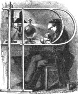
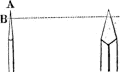
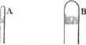
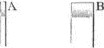
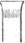
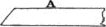
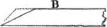
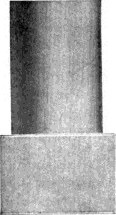
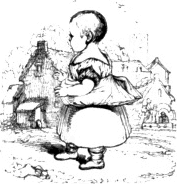
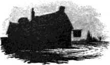

erhaps no art exercised in this country is less known to the public than that of wood engraving; and hence it arises that most persons who have incidentally or even expressly written on the subject have committed so many mistakes respecting the practice. It is from a want of practical knowledge that we have had so many absurd speculations respecting the manner in which the old wood engravers executed their cross-hatchings, and so many notions about vegetable putties and metallic relief engraving. Even in a Memoir of Bewick, printed in 1836, we find the following passage, which certainly would not have appeared had the writer paid any attention to the numerous wood-cuts, containing cross-hatchings of the most delicate kind, published in England between 1820 and 1834:—“The principal characteristic of the ancient masters is the crossing of the black lines, to produce or deepen the shade, commonly called cross-hatching. Whether this was done by employing different blocks, one after another, as in calico-printing and paper-staining, it may be difficult to say; but to produce them on the same block is so difficult and unnatural, that though Nesbit, one of Bewick’s early pupils, attempted it on a few occasions, and the splendid print of Dentatus by Harvey shows that it is not impossible even on a large scale, yet the waste 562 of time and labour is scarcely worth the effect produced.”IX.1 Now, the difficulty of saying whether the old cross-hatchings were executed on a single block, or produced by impressions from two or more, proceeds entirely from the writer not being acquainted with the subject; had he known that hundreds of old blocks containing cross-hatchings are still in existence, and had he been in the habit of seeing similar cross-hatchings executed almost daily by very indifferent wood engravers, the difficulty which he felt would have vanished. “Unnatural” is certainly an improper term for a philosopher to apply to a process of art, merely because he does not understand it: with equal reason he might have called every other process, both of copper-plate and wood engraving, “unnatural;” nay, in this sense there is no process in arts or manufactures to which the term “unnatural” might not in the same manner be applied.
In giving some account of the practice of wood engraving, it seems most proper to begin with the ground-work—the wood. As it is generally understood that box is best adapted for the purposes of engraving, and that it is generally used for cuts intended for the illustration of books, there seems no occasion to enter into a detail of all the kinds of wood that might be used for the more ordinary purposes of large coarse cuts for posting-bills, and others of a similar character. Mr. Savage, in his Hints on Decorative Printing, has copied the principal part of what Papillon has said on the subject of wood, intending that it should be received as information from a practical wood engraver; but he has omitted to notice that much of what Papillon says about the choice of wood, can be of little service in guiding the modern English wood engraver, who executes his subject on the cross-section of the wood, while Papillon and his contemporaries were accustomed to engrave upon the side, or the long-way of the wood. “There is no difficulty,” says Papillon, as translated by Mr. Savage, “in distinguishing that which is good, as we have only need of taking a splinter of the box we wish to try, and break it between the fingers; if it break short, without bending, it will not be of any value; whereas, if there be great difficulty in breaking it, it is well adapted to our purpose.”
Now, it is quite evident from this direction—independent of the fact being otherwise known—that the thin splinter by which the quality of the wood was to be tested was to be cut the long way of the wood: a similar cutting taken from the cross-section would break short, however excellent the wood might be for the purpose of engraving. Papillon’s direction is therefore calculated to mislead, unless accompanied with an explanation of the manner in which the splinter is to be taken; and it 563 is also utterly useless as a test of box that is intended to be engraved on the cross-section, or end-way of the wood.
For the purposes of engraving no other kind of wood hitherto tried is equal to box. For fine and small cuts the smallest logs are to be preferred, as the smallest wood is almost invariably the best. American and Turkey box is the largest; but all large wood of this kind is generally of inferior quality, and most liable to split; it is also frequently of a red colour, which is a certain characteristic of its softness, and consequent unfitness for delicate engraving. From my own experience, English box is superior to all others; for though small, it is generally so clear and firm in the grain that it never crumbles under the graver; it resists evenly to the edge of the tool, and gives not a particle beyond what is actually cut out. The large red wood, on the contrary, besides being soft, is liable to crumble and to cut short; that is, small particles will sometimes break away from the sides of the line cut by the graver, and thus cause imperfections in the work. Box of large and comparatively quick growth, is also extremely liable to shrink unevenly between the rings, so that after the surface has been planed perfectly level, and engraved, it is frequently difficult to print the cut in a proper manner, in consequence of the inequality of the surface.
As even the largest logs of box are of comparatively small diameter, it is extremely difficult to obtain a perfect block of a single piece equal to the size of an octavo page. In order to obtain pieces as large as possible, some dealers are accustomed to saw the log in a slanting direction—in the manner of an oblique section of a cylinder—so that the surface of a piece cut off shall resemble an oval rather than a circle. Blocks sawn in this manner ought never to be used; for, in consequence of the obliquity of the grain, there is no preventing small particles tearing out when cutting a line.
Large red wood containing white spots or streaks is utterly unfit for the purposes of the engraver; for in cutting a line across, adjacent to these spots or streaks, sometimes the entire piece thus marked will be removed, and the cut consequently spoiled. A clear yellow colour, and as equal as possible over the whole surface, is generally the best criterion of box-wood. When a block is not of a clear yellow colour throughout, but only in the centre, gradually becoming lighter towards the edges, it ought not to be used for delicate work; the white, in addition to its not cutting so “sweetly,” being of a softer nature, absorbs more ink than the yellow, and also retains it more tenaciously, so that impressions from a block of this kind sometimes display a perceptible inequality of colour;—from the yellow parts allowing the ink to leave them freely, while the white parts partially retain it, the printed cut has the appearance of having received either too much ink in one place, or too 564 little in another. Besides this, the ink remaining on the white parts becomes so adhesive, that, should the sheet be rather too damp (as will frequently happen when much paper is wetted at one time), it will sometimes stick to the paper; a small spot of white will hence appear in the impression, while a minute piece of paper will remain adhering to the block, to be mixed up with the ink on the balls, and transferred as a black speck to another part of the cut in a subsequent impression. But this is not all: should the piece of paper remain unnoticed for some time it will make a small indention in the block, and occasion a white or grey speck in the impressions printed after its removal. Soft red and white box, more especially the latter, being more porous than clear yellow, blocks of those kinds of wood are most liable to be injured by the liquids used to clean them after printing. Should the printer wash them with either lees or spirits of turpentine, these fluids will enter the wood more freely than if it were yellow, and cause it to expand in proportion to the quantity used, and sometimes to such an extent as to distort the drawing. If a block of any kind of box, whether red, white, or yellow, be wetted or exposed to dampth, it will expand considerably;IX.2 but with care it will return to its former dimensions, should it have been sufficiently seasoned before being printed. When, however, the expansion has been caused by lees or spirits of turpentine, the block will never again contract to its original size.IX.3
As publishers frequently provide the drawings which are to be engraved, perhaps a knowledge of the different qualities of box is as necessary to them as to wood engravers themselves. In reply to this it may be said, why not require the engraver who is to execute the cuts to supply proper wood himself? Where only one engraver is employed to execute all the cuts for a work, the choice of the wood may indeed be very properly left to himself. But where several are employed, and each required to send his own wood to the designer, very few are particular what kind they send; for when the designer receives the different pieces he generally consigns them to a drawer until wanted, and when he has finished a design, he not unfrequently sends it to an engraver who did 565 not supply the identical piece of wood on which it is drawn. Hence scarcely any engraver pays much attention to the kind of wood he sends; for where many are employed in the execution of a series of cuts for the same work, it is very unlikely that each will receive the drawings on the wood supplied by himself. Even when the designer is particular in making the drawings of the subjects which he thinks best suited to each engraver’s talents on the wood which such engraver has supplied, it not unfrequently happens that the person who employs the engravers will not give the blocks to those for whom the artist intended them. Publishers have a much greater interest in this matter than they seem to suspect. If soft wood be supplied, the finer lines will soon be bruised down in printing, and the cut will appear like an old one before half the number of impressions required have been printed; if red-ringed, the surface is extremely liable to become uneven, and also to warp and split.
As box can seldom be obtained of more than five or six inches diameter, and as wood of this size is rarely sound throughout, blocks for cuts exceeding five inches square are usually formed of two or more pieces firmly united by means of iron pins and screws. Should the block, however, be wetted or exposed to dampth, the joints are certain to open, and sometimes to such an extent as to require a piece of wood to be inserted in the aperture.IX.4 Perhaps the best way to guard against a large block opening at the joining of the pieces would be to enclose it with an iron hoop or frame; such hoop or frame being fixed when nearly red-hot in the same manner as a tire is applied to a coach or cart wheel. If the iron fit perfectly tight when forced on to the block in the manner of a tire, it will be the more likely, by its contracting in cold and damp weather, to resist the expansive force of the wood at such times.
Besides the hardness and toughness of box, which allows of clear raised lines, capable of bearing the action of the press, being cut on its surface, this wood, from its not being subject to the attacks of the worm, has a great advantage over apple, pear-tree, beech,IX.5 and other kinds of wood, formerly used for the purposes of engraving. Its preservation in this respect is probably owing to its poisonous nature, for other kinds of wood of greater hardness and durability are frequently pierced through and through by worms. The chips of box, when chewed, are certainly unwholesome to human beings. A fellow-pupil, who had acquired a habit of chewing the small pieces which he cut out with his graver, 566 became unwell, and was frequently attacked with sickness. On mentioning the subject to his medical adviser, he was ordered to refrain from chewing the pieces of box; he accordingly took the doctor’s advice, gave up his bad habit, and in a short time recovered his usual health.IX.6
Box when kept long in a dry place becomes unfit for the purpose of engraving. I have at this time in my possession a drawing which has been made on the block about ten years, but the wood has become so dry and brittle that it would now be impossible to engrave the subject in a proper manner.
When the wood does not cut clear, but crumbles as if it were too dry, the defect may sometimes be remedied by putting the block into a deep earthenware jug or pan, and placing such jug or pan in a cool place for ten or twelve hours. When the wood is too hard and dry to be softened in the above manner, I would recommend that the back of the block should be placed in water—in a plate or large dish—to the depth of the sixteenth part of an inch, for about an hour. If allowed to remain longer there is a risk of the block afterwards splitting.
Box, of whatever kind, when not well seasoned, is extremely liable to warp and bend; but a little care will frequently prevent many of the accidents to which drawings on unseasoned wood are exposed by neglect. For instance, when a block is received by the engraver from the designer or publisher, it ought, if not directly put in hand, to be placed on one of its edges, and not, as is customary with many, laid down flat, with the surface on which the drawing is made upwards. If a block of unseasoned wood be permitted to lie in this manner for a week or two, it is almost certain to turn up at the edges, the upper surface becoming concave, and the lower convex, as is shown in the annexed cut, representing the section of such a block.
The same thing will occur in the process of engraving, though to a small extent, should the engraver’s hands be warm and moist; and also when working by lamp-light without a globe filled with water between the lamp and the block. Such slight warping in the course of engraving is, however, easily remedied by laying the block with its face—that is, the surface on which the drawing is made—downward on the desk or table at all times when the engraver is not actually employed on the 567 subject. The block so placed, provided that it be not of very dry wood, in a short time recovers its former level. When a block of very dry wood becomes dished, or concave, on its upper surface, as shown in the preceding cut, there is little chance of its ever again becoming sufficiently flat to allow of its being well printed. When the deviation from a perfect level at the bottom is not so great as to attract the notice of the pressman previous to taking an impression, the block not unfrequently yields to the action of the platten, and splits. The fracture remains perhaps unobserved for a short time, and when it is at length noticed, the block is probably spoiled beyond remedy.
When box is very dry it is extremely difficult to cut a clear line upon it, as it crumbles, and small pieces fly out at the sides of the line traced by the graver. The small white spots so frequently seen in the delicate lines of the sky in wood-cuts are occasioned by particles flying out in this manner. If a block consist partly of yellow wood and partly of wood with red rings, the yellow will cut clear, while in the red it will be almost impossible to cut a perfect line. When the same piece of wood is yellow and red alternately it is extremely difficult to produce an even tint upon it. Wood of this kind ought always to be rejected, both from the difficulty of engraving upon it with clearness, and from the uncertainty of the surface continuing perfectly flat, as the red rings are more liable to shrink in drying than the other parts, and, from their thus not receiving a sufficient quantity of ink, to appear like so many rainbows in the impression.
The spaces between those rings are greater or less, accordingly as the seasons have been favourable or unfavourable to the growth of the tree. Besides the injurious effect which those red rings are apt to produce in an impression, wood of this kind is very unpleasant and uncertain to engrave on; for as the yellow parts cut pleasant and clear, the engraver, unless particularly on his guard, is betrayed to trust to the whole piece as being of the same uniform tenacity, and before he is aware of its inequality in this respect, or can check the progress of his graver, its point has entered one of those soft red rings, and, to the injury of his work, has either caused a small piece to fly out, or carried the line further than he intended. Wood of this kind is unfit for anything except very common work, and ought never to be used for delicate engraving. There is no certain means of forming a judgment of box-wood until it be cut into slices or trencher-like pieces from the log; for many logs which externally appear sound and of a good colour, prove very faulty and cracked in the centre when sawn up. Turkey box is in particular so defective in this respect that a large slice can seldom be procured without a crack. This, probably, is occasioned by the manner in which the tree is felled. Previous to their beginning to cut down 568 a tree the Turkish wood-cutters fasten a rope to the top, by means of which they break the tree down when the bole is little more than half cut through. The consequence is that a shiver frequently extends through the most valuable portion of the log.
Many artists, who are not accustomed to make drawings on wood, erroneously suppose that the block requires some peculiar preparation. Nothing more is required than to rub the previously planed and smoothed surface with a little powdered Bath-brick, slightly mixed with water: as little water as possible is, however, to be used, as otherwise the block will absorb too much, and be afterwards extremely liable to split. When this thin coating is perfectly dry, it is to be removed by rubbing the block with the palm of the hand. No part of the light powder ought to remain, for, otherwise, the pencil coming in contact with it will make a coarse and comparatively thick line, which, besides being a blemish in the drawing, is very liable to be rubbed off. The object of using the powdered Bath-brick is to render the surface less slippery, and thus capable of affording a better hold to the point of the black-lead pencil.
When the principal parts of the drawing are first washed in upon the block in Indian ink, it is of great advantage to gently rub the surface of the block, when dry, with a little dry and finely powdered Bath-brick, before the drawing is completed with the black-lead pencil. By this means the hard edges of the Indian-ink wash will be softened, the different tints delicately blended, and the subsequent touches of the pencil be more distinctly seen. Some artists, previous to beginning to draw on the block, are in the habit of washing over the surface with a mixture of flake-white and gum-water.IX.7 This practice is, however, by no means a good one. The drawing indeed may appear very bright and showy when first made on such a white surface, but in the progress of engraving a thin film of the preparation will occasionally rise up before the graver and carry with it a portion of the unengraved work, which the engraver is left to restore according to his ability and recollection. This white ground also mixes with the ink in taking a first proof, and fills up the finer parts of the cut. If a white wash be used without gum, the drawing is very liable to be partially effaced in the progress of engraving, and the engraver left to finish his work as he can. The risk of this inconvenience ought to be especially avoided in making drawings on a block, as the wood engraver has not the opportunity of referring to another drawing or to an original painting in the manner of an engraver on copper.
569The less that is done to change the original colour of the wood—by white or any other preparation—so much the better for the engraver; a piece of clear box is sufficiently light to allow of the most delicate lines being distinctly drawn upon it. When the surface of the block is whitened, another inconvenience arises besides those already noticed. It is this: when the drawing is made upon a white ground, and the subject partially engraved, the effect of the whole becomes very confused and perplexing to the engraver in consequence of the parts already engraved appearing nearly of the original colour of the wood, while the ground of the parts not yet cut is white, as first drawn. The engraver’s eye cannot correctly judge of the whole, and the inconvenience is increased by his neither having an original drawing to refer to, nor a proof to guide him: until the cut be completed he has no means of correctly ascertaining whether he has left too much colour or taken too much away.
The engraver on copper or on steel can have an impression of his etching as soon as it is bit in, and can take impressions of the plate at all times in the course of his progress; the wood engraver, on the contrary, enjoys no such advantages; he is obliged to wait until all be completed ere he can obtain an impression of his work. If the wood engraver has kept his subject generally too dark, there is not much difficulty in reducing it; but if he has engraved it too light, there is no remedy. If a small part be badly engraved, or the block has sustained an injury, the defect may be repaired by inserting a small piece of wood and re-engraving it: this mode of repairing a block is technically termed “plugging.”IX.8
When a block requires to be thus amended or repaired, it is first to be determined how much is necessary to be taken out that the restoration may accord with the adjacent parts; for sometimes, in order to render the insertion less perceptible, it may be requisite to take out rather more than the part imactually perfect or injured. This being decided on, a hole is drilled in the block, as is represented in the next page, of a size sufficient to admit “the plug.” The hole ought not to be drilled quite through the block, as the piece let in would, from the shaking and battering of the press, be very likely to become loosened. Should it receive more pressure at the top than bottom, it would sink a little below the engraved surface of the block, and thus appear lighter in the impression than the surrounding parts; while should it be slightly forced up from below it, would appear darker,—in each case forming 570 a positive blemish in the cut.IX.9 When the shape of the part to be restored is too large to be covered with one circular plug, it is better to add one plug to another till the whole be covered, than to insert one of a different shape, and thus fill the space at once. When a single plug is used the section appears thus;
the plug being driven in like a wedge, and having a vacant space around it at the bottom. If an oblong space of the form No. 1. is to be restored, it will be best effected by first inserting a plug at each end, as at No. 2, then adding two others, as at No. 3, and finally wedging them all fast by a central plug, as at No. 4, like the key-stone in an arch. When a plug is firmly fixed, the top is carefully cut down to the level of the block, and the part of the subject wanting re-drawn and engraved. When these operations are well performed no trace of the insertion can 571 be discovered, except by one who should know where to look for it.
THE PLUG OUT.
When a cast is taken from a block which requires the insertion of a plug, the best mode is to have the part intended to be renewed cast blank. In this case a hole of sufficient size is to be drilled in the block, and afterwards filled up with plaster to the level of the surface. A cast being then taken, the part to be re-engraved remains blank, but of a piece with the rest of the metal, so that there is no possibility of its rising up above or sinking below the surface, as sometimes happens when a plug is inserted in a wood-block. When the part remaining blank in the cast is engraved in accordance with the work of the surrounding parts, it is almost impossible to discover any trace of the insertion. The following impression is from a cast of the block illustrating the “plug,” with the part which appears white in the former cut restored and re-engraved in this manner. A white circular line, near the handle of the pail, has been purposely cut to indicate the place of the plug.
Before beginning to engrave any subject, it is necessary to observe whether the drawing be entirely, or only in part, made with a pencil. If it be what is usually called a wash drawing, with little more than the outlines in pencil, it is not necessary to be so cautious in defending it from the action of the breath or the occasional touching of the hand; 572 but if it be entirely in pencil, too much care cannot be taken to protect it from both.
Before proceeding to engrave a delicate pencil drawing the block ought to be covered with paper, with the exception of the part on which it is intended to begin. Soft paper ought not to be used for this purpose, as such is most likely to partially efface the drawing when the hand is pressed upon the block. Moderately stout post-paper with a glazed surface is the best; though some engravers, in order to preserve their eyes, which become affected by white paper, cover the block with blue paper, which is usually too soft, and thus expose the drawing to injury. The dingy, grey, and over-done appearance of several modern wood-cuts is doubtless owing, in a great measure, to the block when in course of engraving having been covered with soft paper, which has partially effaced the drawing. The drawing, which originally may have been clear and touchy, loses its brightness, and becomes indistinct from its frequent contact with the soft pliable paper; the spirited dark touches which give it effect are rubbed down to a sober grey, and all the other parts, from the same cause, are comparatively weak. The cut, being engraved according to the appearance of the drawing, is tame, flat, and spiritless.
Different engravers have different methods of fastening the paper to the block.IX.10 Some fix it with gum, or with wafers at the sides; but this is not a good mode, for as often as it is necessary to take a view of the whole block, in order to judge of the progress of the work, the paper must be torn off, and afterwards replaced by means of new wafers or fresh gum, so that before the cut is finished the sides of the block are covered with bits of paper in the manner of a wall or shop-front covered with fragments of posting-bills. The most convenient mode of fastening the paper is to first wrap a piece of stiff and stout thread three or four times round the edges of the block, and then after making the end fast to remove it. The paper is then to be closely fitted to the block, and the edges being brought over the sides, the thread is to be re-placed above it. If the turns of the thread be too tight to pass over the last corner of the block, A, a piece of string, B, being passed within them and firmly pulled, in the manner here represented, will cause them to stretch a little and pass over on to the edge without difficulty. When this plan is adopted the paper forms a kind of moveable cap, which can 573 be taken off at pleasure to view the progress of the work, and replaced without the least trouble.
I have long been of opinion that many young persons, when beginning to learn the art of wood engraving, have injured their sight by unnecessarily using a magnifying glass. At the very commencement of their pupilage boys will furnish themselves with a glass of this kind, as if it were as much a matter of course as a set of gravers; they sometimes see men use a glass, and as at this period they are prone to ape their elders in the profession, they must have one also; and as they generally choose such as magnify most, the result not unfrequently is that their sight is considerably impaired before they are capable of executing anything that really requires much nicety of vision.
I would recommend all persons to avoid the use of glasses of any kind, whether single magnifiers or spectacles, until impaired sight renders such aids necessary; and even then to commence with such as are of small magnifying power. The habit of viewing minute objects alternately with a magnifying glass and the naked eye—applying the glass every two or three minutes—is, I am satisfied, injurious to the sight. The magnifying glass used by wood engravers is similar to that used by watch-makers, and consists of a single lens, fitted into a short tube, which is rather wider at the end applied to the eye. As the glass seldom can be fixed so firmly to the eye as to entirely dispense with holding it, the engraver is thus frequently obliged to apply his left hand to keep it in its place; as he cannot hold the block with the same hand at the same time, or move it as may be required, so as to enable him to execute his work with freedom, the consequence is, that the engraving of a person who is in the habit of using a magnifying glass has frequently a cramped appearance. There are also other disadvantages attendant on the habitual use of a magnifying glass. A person using such a glass must necessarily hold his head aside, so that the eye on which the glass is fixed may be directly above the part on which he is at work. In order to attain this position, the eye itself is not unfrequently distorted; and when it is kept so for any length of time it becomes extremely painful. I never find my eyes so free from pain or aching as when looking at the work directly in front, without any twisting of the neck so as to bring one eye only immediately above the part in course of execution. I therefore conclude that the eyes are less likely to be injured when thus employed than when one is frequently distorted and pained in looking through a glass. I am here merely speaking from experience, and not professedly from any theoretic knowledge of optics; but as I have hitherto done without the aid of any magnifying power, I am not without reason convinced that glasses of all kinds ought to be dispensed with until impaired vision renders their use absolutely 574 necessary. I am decidedly of opinion that to use glasses to preserve the sight, is to meet half way the evil which is thus sought to be averted. A person who has his sense of hearing perfect never thinks of using a trumpet or acoustic instrument in order to preserve it. All wood engravers, whether their eyes be naturally weak or not, ought to wear a shade, similar to that represented in the following figure, No. 1, as it both protects the eyes from too strong a light, and also serves to concentrate the view on the work which the engraver is at the time engaged in executing.
When speaking on this subject, it may not be out of place to mention a kind of shade or screen for the nose and mouth, similar to that in the preceding figure, No. 2. Such a shade or screen is called by Papillon a mentonnière,IX.11 and its object is to prevent the drawing on the block being injured by the breath in damp or frosty weather. Without such a precaution, a drawing made on the block with black-lead pencil would, in a great measure, be effaced by the breath of the engraver passing freely over it in such weather. Such a shade or screen is most conveniently made of a piece of thin pasteboard or stiff paper.
There are various modes of protecting the eyes when working by lamp-light, but I am aware of only one which both protects the eyes from the light and the face from the heat of the lamp. This consists in filling a large transparent glass-globe with clear water, and placing it in such a manner between the lamp and the workman that the light, after passing through the globe, may fall directly on the block, in the manner represented in the following cut. The height of the lamp can be regulated according to the engraver’s convenience, in consequence of its being moveable on the upright piece of iron or other metal which forms its support. The dotted line shows the direction of the light when the lamp is elevated to the height here seen; by lowering the lamp a 575 little more, the dotted line would incline more to a horizontal direction, and enable the engraver to sit at a greater distance. By the use of those globes one lamp will suffice for three or four persons, and each person have a much clearer and cooler light than if he had a lamp without a globe solely to himself.IX.12
It has been said, and with some appearance of truth, that “the best engravers use the fewest tools;” but this, like many other sayings of a similar kind, does not generally hold good. He undoubtedly ought to be considered the best engraver who executes his work in the best manner with the fewest tools; while it is no less certain that he is a bad engraver who executes his work badly, whether he use many or few. No wood engraver who understands his art will incumber his desk or table with a number of useless tools, though, from a regard to his own time, he will take care that he has as many as are necessary. There are some who pride themselves upon executing a great variety of work with one 576 tool, and hence, firmly believing in the truth of the saying above quoted, fancy that they are first-rate engravers. Such would be better entitled to the name if they executed their work well. A person who makes his tools his hobby-horse, and who bestows upon their ornaments—ebony or ivory handles, silver hoops, &c.—that attention which ought rather to be devoted to his subject, rarely excels as an engraver. He who is vain of the beautiful appearance of his tools has not often just reason to be proud of his work.
There are only four kinds of cutting toolsIX.13 necessary in wood engraving, namely:—gravers; tint-tools; gouges or scoopers; and flat tools or chisels. Of each of these four kinds there are various sizes. The following cut shows the form of a graver that is principally used for outlining or separating one figure from another. A, is the back of the tool; B, the face; C, the point; and D, what is technically called the belly. The horizontal dotted line, 1, 2, shows the surface of the block, and the manner in which part of the handle is cut off after the blade is inserted.IX.14 This tool is very fine at the point, as the line which it cuts ought to be so thin as not to be distinctly perceptible when the cut is printed, as the intention is merely to form a termination or boundary to a series of lines running in another direction. Though it is necessary that the point should be very fine, yet the blade ought not to be too thin, for then, instead of cutting out a piece of the wood, the tool will merely make a delicate opening, which would be likely to close as soon as the block should be exposed to the action of the press. When the outline tool becomes too thin at the point the lower part should be rubbed on a hone, in order to reduce the extreme fineness.
About eight or nine gravers of different sizes, beginning from the outline tool, are generally sufficient. The blades differ little in shape, when first made, from those used by copper-plate engravers; but in order to render them fit for the purpose of wood engraving, it is necessary to give the points their peculiar form by rubbing them on a Turkey stone. In this cut are shown the faces and part of the backs of nine gravers of different sizes; the lower dotted line, A C, shows the extent to which the points of such 577 tools are sometimes ground down by the engraver in order to render them broader. When thus ground down the points are slightly rounded, and do not remain straight as if cut off by the dotted line A C. These tools are used for nearly all kinds of work, except for series of parallel lines, technically called “tints.” The width of the line cut out, according to the thickness of the graver towards the point, is regulated by the pressure of the engraver’s hand.

TINT-TOOL.
GRAVER.
Tint-tools are chiefly used to cut parallel lines forming an even and uniform tint, such as is usually seen in the representation of a clear sky in wood-cuts. They are thinner at the back, but deeper in the side than gravers, and the angle of the face, at the point, is much more acute. About seven or eight, of different degrees of fineness, are generally sufficient. The following cut will afford an idea of the shape of the blades towards the point. The handle of the tint-tool is of the same form as that of a graver. The figure marked A presents a side view of the blade; the others marked B show the faces. Some engravers never use a tint-tool, but cut all their lines with a graver. There is, however, great uncertainty in cutting a series of parallel lines in this manner, as the least inclination of the hand to one side will cause the graver to increase the width of the white line cut out, and undercut the raised one left, more than if in the same circumstances a tint-tool were used. This will be rendered more evident by a comparison of the points and faces of the two different tools: The tint-tool, being very little thicker at B than at the point A, will cause a very trifling difference in the width of a line in the event of a wrong inclination, when compared with the inequality occasioned by the unsteady direction of a graver, whose angle at the point is much greater than that of a proper tint-tool. Tint-tools ought to be sufficiently strong at the back to prevent their bending in the middle of the blade when used, for with a weak tool of this kind the engraver cannot properly guide the point, and hence freedom of execution is lost. Tint-tools that are rather thick in the back are to be preferred to such as are thin, not only from their allowing of great steadiness in cutting, but from their leaving the raised lines thicker at the bottom, and consequently more capable of sustaining the action of the press. A tint-tool that is of the same thickness, both at the back and the lower part, cuts out 578 the lines in such manner that a section of them appears thus: the black or raised lines from which the impression is obtained being no thicker at their base than at the surface; while a section of the lines cut by a tool that is thicker at the back than at the lower part appears thus. It is evident that lines of this kind, having a better support at the base, are much less liable than the former to be broken in printing.

GOUGES.

CHISELS.

C
Gouges of different sizes, from A the smallest to B the largest, as here represented, are used for scooping out the wood towards the centre of the block; while flat tools or chisels, of various sizes, are chiefly employed in cutting away the wood towards the edges. Flat tools of the shape seen in figure C are sometimes offered for sale by tool-makers, but they ought never to be used; for the projecting corners are very apt to cut under a line, and thus remove it entirely, causing great trouble to replace it by inserting new pieces of wood.
The face of both gravers and tint-tools ought to be kept rather long than short; though if the point be ground too fine, it will be very liable to break. When the face is long—or, strictly speaking, when the angle, formed by the plane of the face and the lower line of the blade, is comparatively acute—thus, a line is cut with much greater clearness than when the face is comparatively obtuse, and the small shaving cut out turns gently over towards the hand. When, however, the face of the tool approaches to the shape seen in the following cut, the reverse happens; the small shaving is rather ploughed out than cleanly cut out; and the force necessary to push the tool forward frequently causes small pieces to fly out at each side of the hollowed line, more especially if the wood be dry. The shaving also, instead of turning aside over the face of the tool, turns over before the point, thus, and hinders the engraver from seeing that part of the pencilled line which is directly under it. A short-faced tool of itself prevents the engraver from distinctly seeing the point. When the face of a tool has become obtuse, it ought to be ground to a proper form, for instance, from the shape of the figure A to that of B.


Gravers and tint-tools when first received from the maker are generally too hard,—a defect which is soon discovered by the point breaking off short as soon as it enters the wood. To remedy this, the blade of the tool ought to be placed with its flat side above a piece of iron—a poker will do very well—nearly red-hot. Directly it changes to a straw colour it is to be taken off the iron, and either dipped in sweet oil or allowed to cool gradually. If removed from the iron while it is still of a straw colour, it will have been softened no more than sufficient; but should it have acquired a purple tinge, it will have been softened too much; and instead of breaking at the point, as before, it will bend. A small grindstone is of great service in grinding down the faces of tools that have become obtuse. A Turkey stone, though the operation requires more time, is however a very good substitute, as, besides reducing the face, the tool receives a point at the same time. Though some engravers use only a Turkey stone for sharpening their tools, yet a hone in addition is of great advantage. A graver that has received a final polish on a hone cuts a clearer line than one which has only been sharpened on a Turkey stone; it also cuts more pleasantly, gliding smoothly through the wood, if it be of good quality, without stirring a particle on each side of the line.
The gravers and tint-tools used for engraving on a plane surface are straight at the point, as is here represented; but for engraving on a block rendered concave in certain parts by lowering, it is necessary that the point should have a slight inclination upwards, thus. The dotted lines show the direction of the point used for plane surface engraving. There is no difficulty in getting a tool to descend on one side of a part hollowed out or lowered; but unless the point be slightly inclined upwards, as is here shown, it is extremely difficult to make it ascend on the side opposite, without getting too much hold, and thus producing a wider white line than was intended.
As the proper manner of holding the graver is one of the first things that a young wood engraver is taught, it is necessary to say a few words on this subject. Engravers on copper and steel, who have much harder substances than wood to cut, hold the graver with the fore-finger extending on the blade beyond the thumb, thus, so that by its pressure the point may be pressed into the plate. As box-wood, however, is much softer than copper or steel, and as it is seldom of perfectly equal hardness 580 throughout, it is necessary to hold the graver in a different manner, and employ the thumb at once as a stay or rest for the blade, and as a check upon the force exerted by the palm of the hand, the motion being chiefly directed by the fore-finger, as is shown in the following cut.
The thumb, with the end resting against the side of the block, in the manner above represented, allows the blade to move back and forward with a slight degree of pressure against it, and in case of a slip it is ever ready to check the graver’s progress. This mode of resting the thumb against the edge of the block is, however, only applicable when the cuts are so small as to allow of the graver, when thus guided and controlled, to reach every part of the subject. When the cut is too large to admit of this, the thumb then rests upon the surface of the block, thus:
still forming a stay to the blade of the graver, and a check to its slips, as before.
581In order to acquire steadiness of hand, the best thing for a pupil to begin with is the cutting of tints,—that is, parallel lines; and the first attempts ought to be made on a small block such as is represented in No. 1, which will allow each entire line to be cut with the thumb resting against the edge. When lines of this length can be cut with tolerable precision, the pupil should proceed to blocks of the size of No. 2. He ought also to cut waved tints, which are not so difficult; beginning, as in straight ones, with a small block, and gradually proceeding to blocks of greater size. Should the wood not cut smoothly in the direction in which he has begun, he should reverse the block, and cut his lines in the opposite direction; for it not unfrequently happens that wood which cuts short and crumbles in one direction will cut clean and smooth the opposite way. It is here necessary to observe, that if a certain number of lines be cut in one direction, and another portion, by reversing the block, be cut the contrary way, the tint, although the same tool may have been used for all, will be of two different shades, notwithstanding the pains that may have been taken to keep the lines of an even thickness throughout. This difference in the appearance of the two portions of lines cut from opposite sides is entirely owing to the wood cutting more smoothly in one direction than another, although the difference in the resistance which it makes to the tool may not be perceptible by the hand of the engraver. It is of great importance that a pupil should be able to cut tints well before he proceeds to any other kind of work. The practice will give him steadiness of hand, and he will thus acquire a habit of carefully executing such lines, which subsequently will be of the greatest service. Wood engravers who have not been well schooled in this elementary part of their profession often cut their tints carelessly in the first instance, and, when they perceive the defect in a proof, return to their work; and, with great loss of time, keep thinning and dressing the lines, till they frequently make the tint appear worse than at first.
No. 2.
582When uniform tints, both of straight and waved lines, can be cut with facility, the learner should proceed to cut tints in which the lines are of unequal distance apart. To effect this, tools of different sizes are necessary; for in tints of this kind the different distances between the black lines, are according to the width of the different tools used to cut them; though in tints of a graduated tone of colour, the difference is sometimes entirely produced by increasing the pressure of the graver. In the annexed cut, No. 3, the black lines are of equal thickness, but the width of the white lines between them becomes gradually less from the top to the bottom. By comparing it with No. 4, the difference between a uniform tint, where the lines are of the same thickness and equally distant, and one where the distance between the lines is unequal, will be more readily understood.
A straight-line tint, either uniform, or with the lines becoming gradually closer without appearing darker, is generally adopted to represent a clear blue sky. In No. 3 the tint has been commenced with a comparatively broad-pointed tool; and after cutting a few lines, less pressure, thus allowing the black lines to come a little closer together, has been used, till it became necessary to change the tool for one less broad in the face. In this manner a succession of tools, each finer than the preceding, has been employed till the tint was completed.—To be able to produce a tint of delicately graduated tone, it is necessary that the engraver should be well acquainted with the use of his tools, and also have a correct eye. The following is a specimen of a tint cut entirely with the same graver, the difference in the colour being produced by increasing the pressure in the lighter parts.
Tints of this kind are obtained with greater facility and certainty by using a graver, and 583 increasing the pressure, than by using several tint-tools. On comparing No. 3 with No. 5, it will be perceived that the black lines in the latter decrease in thickness as they approach the bottom of the cut, while in the former they are of a uniform thickness throughout. If a clear sky is to be represented, there is no other mode of making that part near the horizon appear to recede except by means of fine black lines becoming gradually closer as they descend, as seen in the tint No. 3. As the black lines in this tint are closer at the bottom than at the top, it might naturally be supposed that the colour would be proportionably stronger in that part. It is, however, known by experience that the unequal distance of the lines in such a tint does not cause any perceptible difference in the colour; as the upper lines, in consequence of their being more apart, print thicker, and thus counterbalance the effect of the greater closeness of the others.
The two following cuts are specimens of tints represented by means of waved lines: in No. 6 the lines are slightly undulated; in No. 7 they have more of the appearance of zig-zag.
No. 6.
No. 7.
Waved lines are generally introduced to represent clouds, as they not only form a contrast with the straight lines of the sky, but from their form suggest the idea of motion. It is necessary to observe, that if the alternate undulations in such lines be too much curved, the tint, 584 when printed, will appear as if intersected from top to bottom, like wicker-work with perpendicular stakes, in the manner shown in the following specimen, No. 8. This appearance is caused by the unequal pressure of the tool in forming the small curves of which each line is composed, thus making the black or raised line rather thicker in some parts than in others, and the white interstices wide or narrow in the same proportion. The appearance of such a tint is precisely the same whether cut by hand or by a machine.IX.15 In executing waved tints it is therefore necessary to be particularly careful not to get the undulations too much curved.
No. 8.
As the choice of proper tints depends on taste, no specific rules can be laid down to guide a person in their selection. The proper use of lines of various kinds as applied to the execution of wood-cuts, is a most important consideration to the engraver, as upon their proper application all indications of form, texture, and conventional colour entirely depend. Lines are not to be introduced merely as such,—to display the mechanical skill of the engraver; they ought to be the signs of an artistic meaning, and be judged of accordingly as they serve to express it with feeling and correctness. Some wood engravers are but too apt to pride themselves on the delicacy of their lining, without considering whether it be well adapted to express their subject; and to fancy that excellence in the art consists chiefly in cutting with great labour a number of delicate unmeaning lines. To such an extent is this carried by some of this class that they spend more time in expressing the mere scratches of the designer’s pencil in a shade than a Bewick or a Clennell would require to engrave a cut full of meaning and interest. Mere delicacy of lines will not, however, compensate for want of natural 585 expression, nor laborious trifling for that vigorous execution which is the result of feeling. “Expression,” says Flaxman, “engages the attention, and excites an interest which compensates for a multitude of defects—whilst the most admirable execution, without a just and lively expression, will be disregarded as laborious inanity, or contemned as an illusory endeavour to impose on the feelings and the understanding.—Sentiment gives a sterling value, an irresistible charm, to the rudest imagery or the most unpractised scrawl. By this quality a firm alliance is formed with the affections in all works of art.”IX.16 Perpetrators of laborious inanities find, however, their admirers; and an amateur of such delicacies is in raptures with a specimen of “exquisitely fine lining,” and when told that such wood-peckings are, as works of art, much inferior to the productions of Bewick, he asks where his works are to be found; and after he has examined them he pronounces them “coarse and tasteless,—the rude efforts of a country engraver,” and not to be compared with certain delicate, but spiritless, wood engravings of the present day.
With respect to the direction of lines, it ought at all times to be borne in mind by the wood engraver,—and more especially when the lines are not laid in by the designer,—that they should be disposed so as to denote the peculiar form of the object they are intended to represent. For instance, in the limb of a figure they ought not to run horizontally or vertically,—conveying the idea of either a flat surface or of a hard cylindrical form,—but with a gentle curvature suitable to the shape and the degree of rotundity required. A well chosen line makes a great difference in properly representing an object, when compared with one less appropriate, though more delicate. The proper disposition of lines will not only express the form required, but also produce more colour as they approach each other in approximating curves, as in the following example, and thus represent a variety of light and shade, without the necessity of introducing other lines crossing them, which ought always to be avoided in small subjects: if, however, the figures be large, it is necessary to break the hard appearance of a series of such single lines by crossing them with others more delicate.
In cutting curved lines, considerable difficulty is experienced by not commencing properly. For instance, if in executing a series of such lines as are shown in the preceding cut, the engraver commences at A, and works towards B, the tool will always be apt to cut through the black line already formed; whereas by commencing at B, and working towards A, the graver is always outside of the curve, and consequently 586 never touches the lines previously cut.IX.17 This difference ought always to be borne in mind when engraving a series of curved lines, as, by commencing properly, the work is executed with greater freedom and ease, while the inconvenience arising from slips is avoided. When such lines are introduced to represent the rotundity of a limb, with a break of white in the middle expressive of its greatest prominence, as is shown in the following figure A, it is advisable that they should be first laid in as if intended to be continuous, as is seen in figure B, and the part which appears white in A lowered out before beginning to cut them, as by this means all risk of their disagreeing, as in C, will be avoided.

The rotundity of a column or similar object is represented by means of parallel lines, which are comparatively open in the middle where light is required, but which are engraved closer and thicker towards the sides to express shade. The effect of such lines will be rendered more evident by comparing the column in the annexed cut with the square base, which is represented by a series of equidistant lines, each of the same thickness as those in the middle of the column.
Many more examples of tints and simple lines might be given; but, as no real benefit would be derived from them, it is needless to increase the number, and make “much ado about nothing.” Every new subject that the engraver commences presents something new for him to effect, and requires the exercise of his taste and judgment as to the best mode of executing it, so that the whole may have some claim to the character of a work of art. If a thousand examples were given, they would not enable an engraver to 587 execute a subject properly, unless he were endowed with that indefinable feeling which at once suggests the best means of attaining his end. Such feeling may indeed be excited, but can never be perfectly communicated by rules and examples. In this respect every artist, whether a humble wood engraver, or a sculptor or a painter of the highest class, must be self-instructed; the feeling displayed in his works must be the result of his own perceptions and ideas of beauty and propriety. It is the difference in feeling, rather than any greater or less degree of excellence in the mechanical execution, that distinguishes the paintings of Raffaele from those of Le Brun, Flaxman’s statues from those of Roubilliac, and the cuts in the Lyons Dance of Death from many of the laborious inanities of the present day.
Clear, unruffled water, and all bright and smooth metallic substances, are best represented by single lines; for if cross-lines be introduced, except to indicate a strong shadow, it gives to them the appearance of roughness, which is not at all in accordance with the ideas which such substances naturally excite. Objects which appear to reflect brilliant flashes of light ought to be carefully dealt with, leaving plenty of black as a ground-work, for in wood engravings such lights can only be effectively represented by contrast with deep colour. Reflected lights are in general best represented by means of single lines running in the direction of the object, with a few touches of white judiciously taken out. In this respect Clennell particularly excelled as a wood engraver. Painting itself can scarcely represent reflected lights with greater effect than he has expressed them in several of his cuts. In Harvey’s large cut of the Death of Dentatus, after Haydon’s noble picture, the shield of Dentatus affords an instance of reflected light most admirably represented.
As my object is to point out to the uninitiated the method of cutting certain lines, rather than to engage in the fruitless task of showing how such lines are to be generally applied, I shall now proceed to offer a few observations on engraving in outline, a process with which the learner ought to be well acquainted before he attempts subjects consisting of complicated lines. The word outline in wood engraving has two meanings: it is used, first, to denote the distinct boundaries of all kinds of objects; and secondly, to denote the delicate white line that is cut round any figure or object in order to form a boundary to the lines by which such figure or object is surrounded, and to thus allow of their easier liberation: it forms as it were a terminal furrow into which the lines surrounding the figure run. In speaking of this second outline in future, it will be distinguished as the white outline; while the other, which properly defines the different figures and forms, will be called the true or proper outline, or simply 588 the outline, without any distinctive additional term. As the white outline ought never to be distinctly visible in an impression, care ought to be taken, more especially where the adjacent tint is dark, not to cut it too deep or too wide. In the first of the two following cuts, the white outline, intentionally cut rather wider than is necessary, is distinctly seen from its contrast with the dark parts immediately in contact with it.
In the second cut of the same subject, with a different back-ground, it is less visible in consequence of the parts adjacent being light. It is, however, still distinctly seen in the shadow of the feet; but it is shown here purposely to point out an error which is sometimes committed by cutting a white outline where, as in these parts, it is not required. The white outline is here quite unnecessary, as the two blacks 589 ought not to be separated in such a manner; the proper intention of the white outline is not so much to define the form of the figure or object, but, as has been already explained, to make an incision in the wood as a boundary to other lines coming against it, and to allow of their being clearly liberated without injury to the proper outline of the object: when a line is cut to such a boundary, the small shaving forced out by the graver becomes immediately released, without the point of the tool coming in contact with the true outline. The old German wood engravers, who chiefly engraved large subjects on apple or pear tree, and on the side of the wood, were not in the habit of cutting a white outline round their figures before they began to engrave them, and hence in their cuts objects frequently appear to stick to each other. The practice is now, however, so general, that in many modern wood-cuts a white line is improperly seen surrounding every figure.

In proceeding to engrave figures, it is advisable to commence with such as consist of little more than outline, and have no shades expressed by cross-lines. The first step in executing such a subject is to cut a white line on each side of the pencilled lines which are to remain in relief of the height of the plane surface of the block, and to form the impression when it is printed. A cut when thus engraved, and previous to the parts which are white, when printed, being cut away, or, in technical language, blocked out, would present the following appearance.IX.18
It is, however, necessary to observe that all the parts which require to be blocked away have been purposely retained in this cut in order to show more clearly the manner in which it is executed; for the engraver usually cuts away as he proceeds all the black masses seen within the subject. A wide margin of solid wood round the edges of the cut is, 590 however, generally allowed to remain until a proof be taken when the engraving is finished, as it affords a support to the paper, and prevents the exterior lines of the subject from appearing too hard. This margin, where room is allowed, is separated from the engraved parts by a moderately deep and wide furrow, and is covered with a piece of paper serving as a frisket in taking a proof impression by means of friction. In clearing away such of the black parts in the preceding cut as require to be removed, it is necessary to proceed with great care in order to avoid breaking down or cutting through the lines which are to be left in relief. When the cut is properly cleared out and blocked away, it is then finished, and when printed will appear thus:
Sculptures and bas-reliefs of any kind are generally best represented by simple outlines, with delicate parallel lines, running horizontally, to represent the ground. The following cut is from a design by Flaxman for the front of a gold snuff-box made by Rundell and Bridge for George IV. about 1827.
The subject of this design was intended to commemorate the General Peace concluded in 1814: to the left Agriculture is seen flourishing under the auspices of Peace; while to the right a youthful figure is seen placing a wreath above the helmet of a warrior; the trophy indicates his services, and opposite to him is seated a figure of Victory. The three other sides, and the top and bottom, were also 591 embellished with figures and ornaments in relief designed by Flaxman. The whole of the dies were cut in steel by Henning and Son—so well known to admirers of art from their beautiful reduced copies and restorations of the sculptures of the Parthenon preserved in the British Museum—and from these dies the plates of gold composing the box were struck, so that the figures appear in slight relief. A blank space was left in the top of the box for an enamel portrait of the King, which was afterwards inserted, surrounded with diamonds, and the margin of the lid was also ornamented in the same manner. This box is perhaps the most beautiful of the kind ever executed in any country: it may justly challenge a comparison with the drinking cups by Benvenuto Cellini, the dagger hafts designed by Durer, or the salts by Hans Holbein. The process of engraving in this style is extremely simple, as it is only necessary to leave the lines drawn in pencil untouched, and to cut away the wood on each side of them. An amateur may without much trouble teach himself to execute cuts in this manner, or to engrave fac-similes of small pen-and-ink sketches such as the annexed.IX.19
Having now explained the mode of procedure in outline engraving, it seems necessary, before proceeding to speak of more complicated subjects, to say a few words respecting drawings made on the block; for, however well the engraving may be executed, the cut which is a fac-simile of a bad drawing can never be a good one. An artist’s knowledge of drawing is put to the test when he begins to make designs on wood; he cannot resort, as in painting, to the trick of colour to conceal the defects of his outlines. To be efficient in the engraving, his principal figures must be distinctly made out; a drawing on the wood admits of no scumbling; black and white are the only means by which the subject can be represented; and if he be ignorant of the proper management of chiaro-scuro, and incorrect and feeble in his drawing, he will not be able 592 to produce a really good design for the wood engraver. Many persons can paint a tolerably good picture who are utterly incapable of making a passable drawing on wood. Their drawing will not stand the test of simple black and white; they can indicate generalities “indifferently well” by means of positive colours, but they cannot delineate individual forms correctly with the black-lead pencil. It is from this cause that we have so very few persons who professedly make designs for wood engravers; and hence the sameness of character that is to be found in so many modern wood-cuts. It is not unusual for many second and third rate painters, when applied to for a drawing for a wood-cut, to speak slightingly of the art, and to decline to furnish the design required. This generally results rather from a consciousness of their own incapacity than from any real contempt for the art. As greater painters than any now living have made designs for wood engravers in former times, a second or third rate painter of the present day surely could not be much degraded by doing the same. The true reason for the refusal, however, is generally to be found in such painter’s incapacity.
The two next cuts, both drawn from the same sketch,IX.20 but by different persons, will show how much depends upon having a good, artist-like drawing. The first is meagre; the second, on the contrary, is remarkably spirited, and the additional lines which are introduced not only give effect to the figure, but also in printing form a support to the more delicate parts of the outline.
593Though a learner in proceeding from one subject to another more complicated will doubtless meet with difficulties which may occasionally damp his ardour, yet he will encounter none which will not yield to earnest perseverance. As it is not likely that any amateur practising the art merely for amusement would be inclined to test his patience by proceeding beyond outline engraving, the succeeding remarks are more especially addressed to those who may wish to apply themselves to wood engraving as a profession.
When beginning to engrave in outline, it is advisable that the subjects first attempted should be of the most simple kind,—similar, for instance, to the preceding figure marked No. 1. When facility in executing cuts in this style is obtained, the learner may proceed to engrave such as are slightly shaded, and have a back-ground indicated as in No. 2. He may next proceed to subjects containing a greater variety of lines, and requiring greater neatness of execution, but should by no means endeavour to get on too fast by attempting to do much before he can do a little well. Whatever kind of subject be chosen, particular attention ought to be paid to the causes of failure and success in the execution. By diligently noting what produces a good effect in certain subjects, he will, under similar circumstances, be prepared to apply the same means; and by attending to the faults in his work he will be the more careful to avoid them in future. The group of figures here, selected from Sir David Wilkie’s picture of the Rent Day, will serve as an example of a cut executed by comparatively simple means; the subject is also 594 such a one as a pupil may attempt after he has made some progress in engraving slightly shaded figures. There are no complicated lines which are difficult to execute; the hatchings are few, and of simple character; and for the execution of the whole, as here represented, nothing is required but a feeling for the subject; and a moderate degree of skill in the use of the graver, combined with patient application.
When the pupil is thus far advanced, he ought, in subjects of this kind, to avoid introducing more work, more especially in the features, than he can execute with comparative facility and precision; for, by attempting to attain excellence before he has arrived at mediocrity, he will be very likely to fail, and instead of having reason to congratulate himself on his success, experience nothing but disappointment. To make wood engraving an interesting, instead of an irksome study to young persons, I would recommend for their practice not only such subjects as are likely to engage their attention, but also such as they may be able to finish before they become weary of their task. At this period every endeavour ought to be made to smooth the pupil’s way by giving him such subjects to execute as will rather serve to stimulate his exertions than exhaust his patience. Little characteristic figures, like the one here copied, from one of Hogarth’s plates of the Four Parts of the Day, seem most suitable for this purpose. A subject of this kind does not contain so much work as to render a young person tired of it before 595 it be finished; while at the same time it serves to exercise him in the practice of the art and to engage his attention.
When a pupil feels no interest in what he is employed on, he will seldom execute his work well; and when he is kept too long in engraving subjects that merely try his patience, he is apt to lose all taste for the art, and become a mere mechanical cutter of lines, without caring for what they express.
Such a cut as the following—copied from an etching by Rembrandt—will form a useful exercise to the pupil, after he has attained facility in the execution of outline subjects, while at the same time it will serve to display the excellent effect in wood engravings of well contrasted light and shade. The hog—which is here the principal object—immediately arrests the eye, while the figures in the back-ground, being introduced merely to aid the composition and form a medium between the dark colour of the animal and the white paper, consist of little more than outline, and are comparatively light. In engraving the hog, it is necessary to exercise a little judgment in representing the bristly hair, and in touching the details effectively.
When a learner has made some progress, he may attempt such a cut as that on the next page in order to exercise himself in the appropriate representation of animal texture. The subject is a dray-horse, formerly belonging to Messrs. Meux and Co., and the drawing was made on the block by James Ward, R.A., one of the most distinguished animal painters of the present time. Such a cut, though executed by simple 596 means, affords an excellent test of a learner’s skill and discrimination: the hide is smooth and glossy; the mane is thick and tangled; the long flowing hair of the tail has to be represented in a proper manner; and the markings of the joints require the exercise of both judgment and skill. By attending to such distinctions at the commencement of his career, he will find less difficulty in representing objects by appropriate texture when he shall have made greater progress, and will not be entirely dependent on a designer to lay in for him every line. An engraver who requires every line to be drawn, and who is only capable of executing a fac-simile of a design made for him on the block, can never excel.
As enough perhaps has been said in explanation of the manner of cutting tints, and of figures chiefly represented by single lines, I shall now give a cut—Jacob blessing the children of Joseph—in which single-lined figures and tint are combined. It is necessary to observe that this cut is not introduced as a good specimen of engraving, but as being well adapted, from the simplicity of its execution, to illustrate what I have to say. The figures are represented by single lines, which require the exercise of no great degree of skill; and by the introduction of a varied tint as a back-ground the cut appears like a complete subject, and not like a sketch, or a detached group.
It is necessary to remark here, that when comparatively light objects, such as the figures here seen, are to be relieved by a tint of any kind, whether darker or lighter, such objects are now generally separated from it by a black outline. The reason for leaving such an outline in parts where the conjunction of the tint and the figures does not render it absolutely necessary is this: as those parts in a cut which appear white 597 in the impression are to be cut away—as has already been explained,—it frequently happens that when they are cut away first, and the tint cut afterwards, the wood breaks away near the termination of the line before the tool arrives at the blank or white. It is, therefore, extremely difficult to preserve a distinct outline in this manner, and hence a black conventional outline is introduced in those parts where properly there ought to be none, except such as is formed by the tint relieving against the white parts, as is seen in the back part of the head of Jacob in the present cut, where there is no other outline than that which is formed by the tint relieving against his white cap. Bewick used to execute all his subjects in this manner; but he not unfrequently carried this principle too far, not only running the lines of his tints into the white on the light side of his figures,—that is, on the side on which the light falls,—but also on both sides of a light object.
Before dismissing this part of the subject, it is necessary to observe further, that when the white parts are cut away before the tint is introduced, the conventional black outline is very liable to be cut through by the tool slipping. This will be rendered more intelligible by an inspection of the following cut,IX.21 where the house is seen finished, 598 and the part where a tint is intended to be subsequently engraved appears black. Any person in the least acquainted with the practice of wood engraving, will perceive, that should the tool happen to slip when near the finished parts, in coming directly towards them, it will be very likely to cut the outline through, and to make a breach in proportion as such outline may be thin, and thus yield more readily to the force of the tool.
When the tint is cut first, instead of being left to be executed last, as it would be in the preceding cut, the mass of wood out of which the house is subsequently engraved serves as a kind of barrier to the tool in the event of its slipping, and allows of the tint being cut with less risk quite up to the white outline. By attending to such matters, and considering what part of a subject can be most safely executed first, a learner will both avoid the risk of cutting through his outline, and be enabled to execute his work with comparative facility. The following cut is an example of the tint being cut first. For the information of those who are unacquainted with the process of wood engraving, it is necessary to remark that the parts which appear positively black are those which remain untouched by the graver.

599The following subject, copied from one of Rembrandt’s etchings, is chiefly represented by black lines crossing each other. Such lines, usually termed cross-hatchings, are executed with great facility in copper and steel, where they are cut into the metal; but in wood engraving, where they are left in relief, it requires considerable time and attention to execute them with delicacy and precision. In order to explain more clearly the difficulty of executing cross-hatchings, let it be conceived that this cut is a drawing made on a block, and that the engraver’s object is to produce a fac-simile of it: now, as each black line is to be left in relief, it is evident that he cannot imitate the cross-hatchings seen in the arms, the neck, and other parts, by cutting the lines continuously as in engraving on copper, which puts black in by means of an incision, while in wood engraving a similar line takes it out. As the wood engraver, then, can only obtain white by cutting out the parts that are to appear so in the impression, while the black is to be left in relief, the only manner in which he is enabled to represent cross-hatchings, or black lines crossing each other, is to cut out singly with his graver every one of the white interstices. Such an operation, as will be evident from an inspection of this cut, necessarily requires not only patience, but also considerable skill to perform it in a proper manner,—that is, to cut each 600 white space cleanly out, and to preserve the lines of a regular thickness. From the supposed impossibility of executing such cross lines, it has been conjectured that many of the old wood-cuts containing such work were engraved in metallic relief: this opinion, however, is sufficiently refuted, by the fact of hundreds of blocks containing cross-hatchings being still in existence, and by the much more delicate and difficult work of the same kind displayed in modern wood engravings. Not only are cross-hatchings of the greatest delicacy now executed in England, but to such a degree of refinement is the process occasionally carried, that small black touches—such as may be perceived in the preceding cut in the folds of the sleeve above the elbow of the right arm—are left in the white interstices between the lines. Cross-hatchings, where the interstices are entirely white, are executed by means of a lozenge-pointed tool, and the piece of wood is removed at two cuts, each beginning at the opposite angles. Where a small black touch is left within the interstices, the operation becomes more difficult, and is performed by cutting round such minute touch of black with a finely pointed graver.
The various conjectures that have been propounded respecting the mode in which cross-hatchings have been effected in old wood-cuts require no argument to refute them, as they are directly contradicted both by undoubted historical facts, and by every day’s experience. Vegetable putties, punches, and metallic relief are nothing but the trifling speculations of persons who are fonder of propounding theories to display their own ingenuity than willing to investigate facts in order to arrive at the truth. It has happened rather unfortunately, that most persons who have hitherto written upon the subject have known very little about the practice of wood engraving, and have not thought it worth their while to consult those who were able to give them information. There is, however, no fear now of a young wood engraver being deterred from attempting cross-hatchings on learning from certain heretofore authorities on the subject that such work could not be executed on wood. He now laughs at vegetable putties, square-pointed punches for indenting the block to produce cross-hatchings, and metallic relief: by means of his graver alone he produces a practical refutation of every baseless theory that has been propounded on the subject.
The right leg of Dentatus in Mr. Harvey’s large wood engraving after Mr. Haydon’s picture is perhaps the most beautiful specimen of cross-hatching that ever was executed on wood; and, in my opinion, it is the best engraved part of the whole subject. Through the kindness of Mr. Harvey, I have obtained a cast of this portion of the block, from which the present impression is printed. The lines showing the muscular rotundity and action of the limb are as admirably laid in as they are beautifully engraved. In the wider and stronger cross-hatchings 601 of the drapery above, the small black touches previously mentioned are perceived in the lozenge-shaped interstices.
From an opinion that the excellence of an engraving consists chiefly in the difficulty of its execution, we now frequently find cross-hatchings in several modern wood-cuts, more especially in such as are manufactured for the French market, where a better effect would have been produced by simpler means. Cross-hatchings, properly introduced, undoubtedly improve a subject; and some parts of large figures, such as the leg of Dentatus, cannot be well expressed without their aid, as a series of curved lines on a limb, when not crossed, generally cause it to appear stiff and rigid. By crossing them, however, by other lines properly laid in, the part assumes a most soft and natural appearance.
602As the greatest advantage which wood engraving possesses over copper is the effective manner in which strongly contrasted light and shade can be represented, Rembrandt’s etchings,—which, like his paintings, are distinguished by the skilful management of the chiaro-scuro—form excellent studies for the engraver or designer on wood who should wish to become well acquainted with the capabilities of the art. A delicate wood-cut, executed in imitation of a smooth steel-engraving of “sober grey” tone, is sure to be tame and insipid; and whenever wood engravers attempt to give to their cuts the appearance of copper or steel-plates, and neglect the peculiar advantages of their own art, they are sure to fail, notwithstanding the pains they may bestow. Their work, instead of being commended as a successful application of the peculiar means of the art, is in effect condemned by being regarded as “a clever imitation of a copper-plate.”
The above cut of Christ and the Woman of Samaria, copied from an etching by Rembrandt, will perhaps more forcibly illustrate what has been said with respect to wood engraving being excellently adapted to effectively express strong contrasts of light and shade. The original etching—which has been faithfully copied—is a good example of 603 Rembrandt’s consummate skill in the management of chiaro-scuro; everything that he has wished to forcibly express immediately arrests the eye, while in the whole design nothing appears abrupt. The extremes of light and shade concentre in the principal figure, that of Christ, and to this everything else in the composition is either subordinate or accessory. The middle tint under the arched passage forms a medium between the darkness of Christ’s robe and the shade under the curve of the nearest arch, and the light in the front of his figure is gradually carried off to the left through the medium of the woman and the distant buildings, which gradually approach to the colour of the paper. Were a tint, however delicate, introduced in this subject to represent the sky, the effect would be destroyed; the parts which are now so effective would appear spotted and confused, and have a crude, unfinished appearance. By the injudicious introduction of a tinted sky many wood-cuts, which would otherwise be striking and effective, are quite spoiled.
It but too frequently happens when works are illustrated with wood-cuts, that subjects are chosen which the art cannot successfully represent. Whether the work to be illustrated be matter of fact or fiction, the designer, unless he be acquainted both with the capabilities and defects of the art, seldom thinks of more than making a drawing according to his own fancy, and never takes into consideration the means by which it has to be executed. To this inattention may be traced many failures in works illustrated with wood-cuts, and for which the engraver is censured, although he may have, with great care and skill, accomplished all that the art could effect. An artist who is desirous that his designs, when engraved on wood, should appear like impressions from over-done steel-plates, ought never to be employed to make drawings for wood engravers: he does not understand the peculiar advantages of the art, and his designs will only have a tendency to bring it into contempt, while those who execute them will be blamed for the defects which are the result of his want of knowledge.
Delicate wood engravings which are made to look well in a proof on India paper by rubbing the ink partially off the block in the lighter parts—in the manner described by Papillon at page 466—generally present a very different appearance when printed, either with or without types in the same page. Lines which are cut too thin are very liable to turn down in printing from their want of support; and hence cuts consisting chiefly of such lines are seldom so durable as those which display more black, and are executed in a more bold and effective style. A designer who understands the peculiarities of wood engraving will avoid introducing delicate lines in parts where they receive no support from others of greater strength or closeness near to them, but are exposed 604 to the unmitigated force of the press. Cuts in proportion to the quantity of colour which they display are so much the better enabled to bear the action of the press; the delicate lines which they contain, from their receiving support from the others, are not only less liable to break down, but, from their contrast with the darker parts of the subject, appear to greater advantage than in a cut which is of a uniformly grey tone. I am not, however, the advocate of black, and little else, in a wood-cut; on the contrary, I am perfectly aware of the absurdity of introducing patches of black without either meaning or effect. What I wish to inculcate is, that a wood-cut to have a good effect must contain more of properly contrasted black and white than those who wish their cuts to appear like imitations of steel or copper-plate engravings are willing to allow. As wood engraving is not well adapted to represent subjects requiring great delicacy of lines and variety of tints, such will be generally avoided by a designer who understands the art; while, on the contrary, he will avail himself of its advantages in representing well contrasted light and shade in a manner superior to either copper-plate or steel engraving. Of all modern engravers on wood, none understood the advantages of their art in this respect better than Bewick and Clennell: the cuts of their engraving are generally the most effective that have ever been executed.
Night-pieces, where the light is seen proceeding from a lantern, a lamp, or any other luminous object, can be well represented by means of wood engraving, although such subjects are very seldom attempted. An engraved wood-block, which contains a considerable proportion of positive black, prints much better than a copper-plate engraving of the same kind; in the former the ink is distributed of an even thickness over the surface, and is evenly pressed upon the paper; in the latter the ink forms a little pool in the hollowed parts, and, instead of being evenly taken up by the paper which is pressed into it, adheres only partially, thus giving in the corresponding parts a blurred appearance to the impression. For the effective representation of such scenes as Meg Merrilies watching by a feeble light the dying struggles of a smuggler, or Dirk Hatterick in the Cave, from Sir Walter Scott’s Guy Mannering, wood engraving is peculiarly adapted,—that is, supposing the designer, in addition to possessing a knowledge of chiaro-scuro, to be also capable of drawing correctly, and of treating the subject with proper feeling. Some idea of the capability of the art in this respect may be formed from the following cut—the Flight into Egypt,—copied from an etching by Rembrandt. The mere work in this cut is of a very simple character; there are no lines of difficult execution; and the only parts that are lowered are those which represent the rays of light seen proceeding from the lantern.
605As the wood engraver can always get his subject lighter, but cannot reproduce the black which he has cut away, he ought to be careful not to get his subject too light before he has taken a proof; and even in reducing the colour according to the touchings of the designer on the proof, he ought to proceed with great circumspection; and where his own judgment informs him that to take out all the black marked for excision would be to spoil the cut, the safest mode would be to take out only a part, and not remove all at once; for by strictly adhering to the directions of an artist who knows very little of the real advantages of wood engraving, it will not unfrequently happen that the cut so amended will to himself, when printed, appear worse than it did in its first state. In the following cut too much has been done in this respect; it has been touched and retouched so often, in order to make it appear delicate, that the spirit of the original drawing has been entirely lost. In this instance the fault was not that of the artist, but of the engraver, who “would not let well alone;” but, in order to improve his work, as he 606 fancied, kept trimming the parts which gave effect to the whole till he made it what it now appears. So far as relates to the execution of the lines, the subject need not have been better; but, from the engraver’s having taken away too much colour in places where it was necessary, the whole has the appearance of middle tint, the excellence of the original drawing is lost, and in its stead we have a dull, misty, spiritless wood engraving.
In every cut there ought to be a principal object to first arrest the attention; and if this cannot be effected from want of interest in such object considered singly, the designer ought to make the general subject 607 pleasing to the eye by skilful composition or combination of forms, and the effective distribution of light and shade.
The preceding cut—a moonlight scene—when compared with the previous one, will show how much depends on an engraver having a proper feeling for his subject. So far as relates to the mere execution of the lines, this cut is decidedly inferior to the former; but, viewed as a production of art, and as a spirited representation of the original drawing, it is very much superior: in the former we see little more than mechanical dexterity; while in the latter we perceive that the engraver has, from a greater knowledge of his art, produced a pleasing effect by comparatively simple means. The former cut displays more mechanical skill; the latter more artistic feeling. The one contains much delicate work, but is deficient in spirit; the other, which has been produced with little more than half the labour, is more effective because the subject has been better understood.
The following cut, representing a landscape, with the effect of the setting sun, displays great delicacy of execution; but the labour here is not thrown away, as in the sea-piece just mentioned: manual dexterity in the use of the graver is combined with the knowledge of an artist, and the result is a wood engraving at once delicate in execution and spirited in its general effect.
A volume might be filled with examples and comments on them, and I might, like Papillon, instruct the reader in the practice of the art, by informing him how many times the graver would have to enter the wood in order to produce a certain number of lines in relief; but I have no inclination to do either the one or the other: my object is to make 608 a few observations on some of the most important and least understood points in the practice of wood engraving, and to illustrate them with examples, rather than to enter into minute details, which would be uninteresting to the general reader, and useless to the learner who has made any progress in the art. The person who wishes to acquire a knowledge of wood engraving, with the view of practising it professionally, must generally be guided by his own judgment and feeling; for he who requires the aid of rules and examples in every possible case will never attain excellence. A learner ought not to put much trust in what is said about the beautiful wood-cuts—or plates, as some critics call them—which appear in modern publications. He ought to examine for himself, and not pin his faith to ephemeral commendations, which are often the customary acknowledgment for a presentation copy of the work. It is not unusual to find very ordinary wood-cuts praised as displaying the very perfection of the art, while others of much greater merit are entirely overlooked.
The person who wishes to excel as a wood engraver,—that is, to display in his cuts the knowledge and feeling of an artist, as well as the mechanical dexterity of a workman,—ought always to bear in mind that those who rank highest in modern times, not only as engravers, but also as designers on wood, have generally adopted the simplest means of effecting their purpose, and have never introduced unmeaning cross-hatchings, when working from their own drawings, merely to display their skill in execution. In representing a peasant supping his porridge, they have not spent a day on the figure, and two in delicately engraving the bowl. It may almost be said that Bewick never employed cross-hatchings; for, in the two or three instances in which he introduced such lines, it has been rather for the sake of experiment than to improve the appearance of the cut. Though one of the finest specimens of this kind of work ever executed on wood is to be found in Mr. Harvey’s cut of Dentatus, yet, on other occasions, when he engraved his own designs, he seldom introduced cross-hatchings when he could accomplish the same object by simpler means. A wood engraving, viewed as a work of art, is not good in proportion as many of its parts have the appearance of fine lace. Bewick’s birds and tail-pieces are not, in my opinion, less excellent because they do not display so much work as a modern wood-cut which contains numerous cross-hatchings. Several of the best French designers on wood of the present day appear to have formed erroneous opinions on this subject; and hence we find in many of their designs much of the engraver’s time spent in the execution of parts which are unimportant, while others, where expression or feeling ought to be shown, are treated in a careless manner. Many of their designs seem to have been made rather to test the patience 609 of the engraver as a workman than to display his ability as an artist. The following cut, from a cast of a part of the Death of Dentatus, is introduced to show in how simple and effective a manner Mr. Harvey has represented the shield of the hero. An inferior artist would be very likely to represent such an object by means of complicated lines, which, while they would be less effective, would require nearly a week to engrave.
Considering the number of wood engravings that are yearly executed in this country, it is rather surprising that there should hitherto have been so few persons capable of making a good drawing on wood. Till within 610 the last few years, it might be said that there was probably not more than one artist in the kingdom possessing a knowledge of design who professionally devoted himself to making drawings on the block for wood engravers. Whenever a good original design is wanted, there are still but few persons to whom the English wood engraver can apply with the certainty of obtaining it; for though some of our most distinguished painters have occasionally furnished designs to be engraved on wood, it has mostly been as a matter of especial favour to an individual who had an interest in the work in which such designs were to appear. In this respect we are behind our French neighbours; the more common kind of French wood-cuts containing figures are much superior to our own of the same class; the drawing is much more correct, more attention is paid to costume, and in the details we perceive the indications of much greater knowledge of art than is generally to be found in the productions of our second-rate occasional designers on wood. It cannot be said that this deficiency results from want of encouragement; for a designer on wood, of even moderate abilities, is better paid for his drawings than a second-rate painter is for his pictures. The truth is, that a taste for correct drawing has hitherto not been sufficiently cultivated in England: our artists are painters before they can draw; and hence, comparatively few can make a good design on wood. They require the aid of positive colours to deceive the eye, and prevent it from resting upon the defects of their drawing. It is therefore of great importance that a wood engraver should have some knowledge of drawing himself, in order that he may be able to correct many of the defects that are to be found in the commoner kind of subjects sent to him to be engraved.
In the execution of subjects which require considerable time, but little more than the exercise of mechanical skill, it is frequently advisable to adopt the principle of the division of labour, and have the work performed, as it were, by instalments, allotting to each person that portion of the subject which he is likely to execute best. In this manner the annexed cut of Rouen Cathedral has been engraved by four different persons; and the result of their joint labours is such a work as not even the best engraver of the four could have executed by himself. Each having to do but a little, and that of the kind of work in which he excelled, has worked con amore, and finished his task before he became weary of it.
Though copper-plate engraving has a great advantage over wood when applied to the execution of maps, in consequence of the greater delicacy that can be given to the different shades and lines, indicating hills, rivers, and the boundaries of districts, and also from the number of names that can be introduced, and from the comparative facility of 611 executing them; yet, as maps engraved on copper, however simple they may be, require to be printed separately, by means of a rolling-press, the unavoidable expense frequently renders it impossible to give such maps, even when necessary, in books published at a low price. Under 612 such circumstances, where little more than outlines, with the course of rivers, and comparatively few names, are required, wood engraving possesses an advantage over copper, as such maps can be executed at a very moderate expense, and printed with the letter-press of the work for which they are intended. As the names in maps engraved on wood are the most difficult parts of the subject, the method of drilling holes in the block and inserting the names in type—as was adopted in the maps to Sebastian Munster’s Cosmography, Basle, 1550,IX.22—has recently been revived. The names in the outline maps contained in the Penny Cyclopædia are inserted in this manner. Had those maps not been engraved on wood, it would have been impossible that any could have been given in the work, as the low price at which it is published would 613 not have allowed of their being engraved on copper, and, consequently, printed by means of a rolling-press at an additional expense.
When, however, a map is of small dimensions, and several names in letters of comparatively large size are required to be given, this method of piercing the block can scarcely be applied without great risk of its breaking to pieces under the press, in consequence of its being weakened in parts by the holes drilled through it being so near together.IX.23 This inconvenience, however, may be remedied by engraving the names in intaglio where they are most numerous, and afterwards cutting a tint over them, so that when printed they may appear white on a dark ground. Other names beyond the boundary of the map can be inserted, where necessary, in type. The preceding skeleton map of England and Wales, showing the divisions of the counties and the course of the principal rivers, has been executed in this manner: all the names on the land, and the courses of the rivers, were first engraved on the smooth surface of the block in intaglio—in less than a third of the time which would have been required to engrave them in relief; the tint was next cut; and lastly, the block was pierced, and all the other names inserted in type, with the exception of the word “ENGLAND” in the title, which was engraved in the same manner as the names on the land.
As what has been previously said about the practice of the art relates entirely to engraving where the lines are of the same height, or in the same plane, and when the impression is supposed to be obtained by the pressure of a flat surface, I shall now proceed to explain the practice of lowering, by which operation the surface of the block is either scraped away from the centre towards the sides, or, as may be required, hollowed out in other places. The object of thus lowering a block is, that the lines in such places may be less exposed to pressure in printing, and thus appear lighter than if they were of the same height as the others. This method, though it has been claimed as a modern invention, is of considerable antiquity, having been practised in 1538, as has been previously observed at page 462. Instances of lowering are very frequent in cuts engraved by Bewick; but until within the last five or six years the practice was not resorted to by south-country engravers. It is absolutely necessary that wood-cuts intended to be printed by a steam-press should be lowered in such parts as are to appear light; for, as the pressure on the cut proceeds from the even surface of a metal cylinder covered with a blanket, there is no means of helping a cut, as is generally done when printed by a hand-press, by means of overlays. Overlaying consists in pasting pieces of 614 paper either on the front or at the back of the outer tympan, immediately over such parts of the block as require to be printed dark; and the effect of this is to increase the action of the platten on those parts, and to diminish it on such as are not overlaid. When lowered blocks are printed at a common press, it is necessary that a blanket should be used in the tympans, in order that the paper may be pressed into the hollowed or lowered parts, and the lines thus brought up. The application of the steam-press to printing lowered wood-cuts may be considered as an epoch in the history of wood engraving. Wood-cuts were first printed by a steam-press at Messrs. Clowes and Sons’ establishment,IX.24 and since that time lowering has been more generally practised than at any former period.
615By means of simply lowering the edges of a block, so that the surface shall be convex instead of plane, the lines are made to diminish in strength as they recede from the centre until they become gradually blended with the white paper on which the cut is printed. This is the most simple mode of lowering, and is now frequently adopted in such cuts as are termed vignettes,—that is, such as are not bounded by definite lines surrounding them in the manner of a border. In the preceding cut, representing a group from Sir David Wilkie’s painting of the Village Festival, in the National Gallery, the light appearance of the lines towards the edges has been produced in this manner.
Mr. Landseer, in his Lectures on Engraving, observes that hard edges are incident to wood-cut vignettes. He was not aware of the means by which this objectionable appearance could be remedied. The following are his observations on this subject: “A principal beauty in most vignettes consists in the delicacy with which they appear to relieve from the white paper on which they are printed. The objects of which vignettes consist, themselves forming the boundary of the composition, their extremities should for the most part be tenderly blended—be almost melted, as it were, into the paper, or ground. Now, in printing with the letter-press, the pressure is rather the strongest at the extremities of the engraving, where we wish it to be weakest, and it is so from the unavoidable swelling of the damp paper on which the impressions are worked, and the softness of the blankets in the tympans of the press. Hence, hard, instead of soft edges, are incident to vignettes engraven on wood, which all the care of the printer, with all the modern accuracy of his machine, can rarely avoid.”
Mr. Landseer’s objection to vignettes engraved on wood applies only to such as are engraved on a plane surface, since by lowering the block towards the edges, lines gradually blending with the white paper can be obtained with the greatest facility. For the representation of such subjects,—supposing that their principal beauty consists in “the delicacy with which they appear to relieve from the white paper,”—wood engraving is as well adapted as engraving on copper or steel. Though it is certainly desirable that the lines in a vignette should gradually become blended with the colour of the paper, yet something more is required in an engraving of this kind, whether on wood or on metal. Much depends on its form harmonizing with the composition of the subject: a beautiful drawing reduced to an irregular shape, and having the edges merely softened, will not always constitute a good vignette. Of this we have but too many instances in modern copper-plate engravings, as well as wood-cuts. Of all modern artists J. M. W. Turner, R.A., and W. Harvey appear to excel in giving to their vignettes a form suitable to the composition.
616Perhaps it may not be out of place to say a few words here on the original meaning of the word vignette, which is now generally used to signify either a wood-cut or a copper-plate engraving which is not inclosed by definite lines forming a border. The word is French, and is synonymous with the Latin viticula, which means a little vine, or a vine shoot, such as is here represented.
Capital letters in ancient manuscripts were called by old writers viticulæ, or vignettes, in consequence of their being frequently ornamented with flourishes in the manner of vine branches or shoots. The letter C, forming the commencement of this paragraph, is an example of an old vignette; it is copied from a manuscript apparently of the thirteenth century, formerly belonging to the monastery of Durham, but now in the British Museum. Subsequently the word was used to signify any large ornament at the top of a page; in the seventeenth century all kinds of printer’s ornaments, such as flowers, head and tail-pieces, were generally termed vignettes; and more recently the word has been used to express all kinds of wood-cuts or copper-plate engravings which, like the group from the Village Festival, are not inclosed within a definite border. Rabelais uses the word to denote certain ornaments of goldsmith’s work on the scabbard of a sword; and our countryman Lydgate thus employs it in his Troy 618 Book to denote the sculptured foliage and tracery at the sides of a window:
“And if I should rehearsen by and by
The corve knots, by craft and masonry,
The fresh embowing with virges right as lines,
And the housing full of backewines,
The rich coining, the lusty battlements,
Vinettes running in casements.”
Page image showing original layout.
The additional specimens of ornamental capitals on the preceding page are chiefly taken from Shaw’s Alphabets, in which will be found a great variety of capitals of all ages.
Before introducing any examples of concave lowering in the middle of a cut, it seems necessary to give first a familiar illustration of the principle, in order that what is subsequently said upon this subject may be the more readily understood.—The crown-piece of George IV., which every reader can refer to, will afford the necessary illustrations. As the head of the King on the obverse, and the figures of St. George, the horse, and the dragon, on the reverse, are in relief,—that is, higher than the field,—it is evident, that if the coin were printed, each side separately, by means of pressure from an even surface, whether plane or cylindrical, covered with a yielding material, such as a blanket or woollen cloth, so as to press the paper against the field or lower parts, the impressions would appear as follows,—that is, with the parts in relief darkest, and the lower proportionably lighter from their being less exposed to pressure.
IMPRESSIONS FROM A SURFACE WITH THE FIGURES IN RELIEF.
If casts be taken of each side of the same coin, the parts which in the original are raised, or in relief, will then be concave, or in intaglio;IX.25 and if such casts be printed in the manner of wood-cuts, the impressions will appear as in the opposite page,—that is, the field 619 being now highest will appear positively black, while the figures now in intaglio, or lowered, as I should say when speaking of a wood-cut, will appear lighter in proportion to the concavity of the different parts.
IMPRESSIONS FROM A SURFACE WITH THE FIGURES LOWERED, OR IN INTAGLIO.
Upon a knowledge of the principle here exemplified the practice of lowering in wood engraving entirely depends. When a block is properly lowered, there is no occasion for overlays; and when cuts are to be printed at a steam-press,—where such means to increase the pressure in some parts and diminish it in others cannot be employed without great loss of time,—it becomes absolutely necessary that the blocks should be lowered in the parts where it is intended that the lines should appear light.
In order that a cut should be printed properly without overlays, either at a common press with a blanket in the tympans, or at a steam-press where the cylinder is covered with woollen cloth, it is necessary that the parts intended to appear light should be lowered before the lines seen upon them are engraved; and the mode of proceeding in this case is as follows:—The designer being aware of the manner in which the cut is to be printed, and understanding the practice of lowering, first makes the drawing on the block in little more than outline,IX.26 and washes in with flake-white the parts which it is necessary to lower. The block is then sent to the engraver, who, with an instrument resembling a sharp-edged burnisher, or with a flat tool or chisel, scrapes or pares away the wood in the parts indicated. When the lowering is completed, the designer finishes the drawing, and the cut is engraved. It is necessary to observe, that unless the person who makes the drawing on the block perfectly understand the principle of lowering, and the purposes for which it is intended, he will never be able to design properly a subject intended to be printed by a steam-press.
620When an object is to be represented dark upon a light ground, or upon middle tint, the first operation in beginning to lower the block is to cut a delicate white outline round the dark object, and proceed with a flat tool or a scraper, as may be most convenient, to take a thin shaving or paring off those parts on which the background or middle tint is to be engraved. The extent to which the block must be lowered will depend on the degree of lightness intended to be given to such parts. In Bewick’s time, when the pressmen used leather balls to ink the cuts and types, it was only necessary to take a very thin shaving off the block in order to produce the desired effect; as such balls, from the want of elasticity in the leather, which was comparatively hard and unyielding, would only touch lightly such parts as were below the level of the other lines and the face of the types: had the block been lowered to any considerable depth, such parts would not have received any ink, and consequently would not have shown the lines engraved on them in the impression. In the present day, when composition rollers are used, it is necessary to lower the parts intended to appear light to a much greater depth than formerly;IX.27 as such rollers, in consequence of their greater elasticity, are pressed, in the process of inking, to a considerably greater depth between the lines of a cut than the old leather balls. The preceding cut—a Shepherd’s Dog, drawn by W. Harvey,—is printed from 621 a block in which both the fore-ground and distance are lowered to give greater effect to the animal. If such a cut, printed in the same page with types, as it appears here, were inked with leather balls, a considerable portion of the lowered parts would not be visible. This cut illustrates the principle of printing from a surface—such as that of a coin—in which the head or figure is in relief.
In the next cut, an Egret, from a drawing by W. Harvey, the figure of the bird appears white on a dark ground,—the reverse of the cut of the Shepherd’s Dog,—and is an example of lowering the block in the middle in the manner of a die with the figures in intaglio, or a cast from a coin in which the head or figures are in relief.
In a cut of this kind the general form of the principal object required to be light is first lowered out, and the drawing of the figure being next completed upon the hollowed part, the engraver proceeds to cut the lines, beginning with the back-ground and finishing the principal object last. In cutting the lines in the hollowed part, the engraver uses such a tool, slightly curving upwards towards the point, as has been previously described at page 579. In lowering the principal object in a cut of this kind, the greatest attention is necessary in order that the hollowed parts may be gradually concave, and also of a sufficient depth. In performing this operation, the engraver is solely guided by his own judgment; and unless he have some practical knowledge of the extent to which composition balls and rollers will 622 penetrate in such hollowed parts, it is almost impossible that he should execute his work in a proper manner;—should he succeed, it will only be by chance, like a person shooting at a mark blindfolded. In such cases, though no special rules can be given, it is necessary to observe that the part lowered will, in proportion to its area, be exposed to receive nearly the same quantity of ink, and the same degree of pressure, as the lines on a level with the types. The depth to which such parts require to be lowered will consequently depend on their extent; and the degree of lightness intended to be given to the lines engraved on them. This, however, will be best illustrated by the annexed diagram. If, for instance, the part to be lowered extend from A to B, it will be necessary to hollow the block to the depth indicated by the dotted line A c B. Should it extend from A to D, it will require to be lowered to the depth of the dotted line A e D in order to obtain the same degree of lightness in colour as in the lowered part A c B of less area,—that is, supposing the engraved lines in both cases to be of equal delicacy.
As overlaying such delicately engraved cuts as require the greatest attention in printing occupies much time, and lays the press idle during the process, the additional sum charged per sheet for works containing a number of such cuts has frequently operated to the disadvantage of wood engraving, by causing its productions to be dispensed with in many books where they might have been introduced with great advantage, both as direct and incidental illustrations. It is, therefore, of great 623 importance to adapt the art of wood engraving to the execution of cuts of all kinds, whether comparatively coarse or of the greatest delicacy, so that they may be properly printed at the least possible expense.
The preceding cut, with the two following, which have all been lowered, would, if printed at a steam-press, appear nearly as well as they do in the present work, where they have been printed by means of a common press with a blanket. But such a subject—a winter-piece, with an ass and her foal standing near an old outhouse,—cannot be properly represented without lowering the block; for no overlaying would cause the lines indicating the thatch on the houses and the stacks, as seen through the snow, to appear so soft as they now do.
In this cut of a Salmon Trout, with a view of Bywell Lock, on the river Tyne, both the fore-ground and the distance are lowered; the objects which appear comparatively dark in those parts are the least reduced, while those that appear lightest are such as are lowered to the greatest extent. The back of the fish, which appears dark in the impression, is in the block like a ridge, which is gradually lowered in a hollow curve towards the lower line. In such a cut as this, particular care ought to be taken not to lower too much those parts which come into immediate contact with a strong black outline, such as the back of the Salmon; for where the lowering in such parts is too abrupt, there is great risk of the lines engraved on them not being brought up, and thus causing the figure in relief to appear surrounded with a white line, as in the impressions from the crown-piece at page 618.
By means of lowering, the black pony, on which a boy is seen riding, in the following cut, is much more effectively represented, than if the 624 whole subject were engraved on a plane surface. The grey horse, and the light jacket of the rider, the ground, the garden wall, and the lightest of the trees, are all lowered in order to give greater effect to the pony.
A cut which is properly lowered may not only be printed by a steam-press without overlays, but will also afford a much greater number of good impressions than one of the same kind engraved on a plane surface; for the more delicate parts, being lower than those adjacent to them, are thus saved from too much pressure, without the necessity of increasing it in other places. The preceding cut will serve to show 625 the advantages of lowering in this respect. It was originally engraved, from a drawing by William Harvey, for the Treatise on Cattle, published under the direction of the Society for the Diffusion of Useful Knowledge. Though twelve thousand impressions have already been printed from it by means of Messrs. Clowes and Sons’ steam-press, it has not sustained the slightest injury in any part; and the present impression is scarcely inferior to the first proof. With the exception of clearing out the ink in two or three places, it has required no preparation or retouching to give it its present appearance. Had such a work as the Treatise on Cattle been printed at a common press without the blocks having been lowered, the cost of printing would have been at least double the sum charged by Messrs. Clowes; and the engraving, after so great a number of impressions had been taken, would have been considerably injured, if not quite spoiled.
In complicated subjects, consisting of many figures, and in which the light and shade are much diversified, it becomes necessary to combine the two principles of lowering, which have been separately illustrated by the Dog and the Egret, and to adapt them according to circumstances, forming some parts convex, and making others concave, respectively, as the objects engraved on them are to appear dark or light. In order to illustrate this process of combined lowering, I have chosen a subject from Rembrandt—the Descent from the Cross—in which several figures are introduced, and in which the lights and shades are so much varied—in some parts blended by a delicate middle tint, and in others strongly contrasted—as to afford the greatest possible scope for the illustration of what is termed lowering in a wood engraving.
The cut on the next page shows the appearance of an impression taken from the block before a single line had been engraved, except the white outline bounding the figures. All that is here seen has been effected by the flat tool and the scraper; the lightest parts are those that are most concave, the darkest those that are most convex. The parts which have the appearance of a middle tint are such as are reduced to a medium between the strongest light and the darkest shade. The impression in its present state has very much the appearance of an unfinished mezzotint.
In order to render this example of complicated lowering more intelligible to those who have little knowledge of the subject, it seems necessary to give a detailed account of the process, even at the risk of repeating some previous explanations. In complicated as well as in simple subjects intended to be lowered, the design is first drawn in outline on the wood. In such a subject as that which is here given, the Descent from the Cross, it is necessary to cut a delicate white outline—such as is seen in the ladder—round all those parts where the true 626 outline appears dark against light, previous to lowering out those light parts which come into immediate contact with such as are dark. When a white outline has been cut where required, a thin shaving is to be taken off those parts which are intended to be a shade lighter than the middle tints,—for instance, in the rays of light falling upon the cross, and in the lower part of the sky. After this, the light parts of the ground and the figures are to be lowered; but, instead of taking a mere shaving off the latter, the depth to which they are to be hollowed out will depend on the form and size of the parts, and the strength of the light intended to appear on them; and where a series of delicate lines are to run into pure white, great care must be taken that the wood be sufficiently bevelled or rounded off to allow of their blending with the white, without their extremities forming a distinct line, more especially where rotundity is to be represented. In a block thus lowered, the parts intended to be lightest will be the most concave, and those intended to be darkest the most in relief; and, when printed, the 627 impression will appear as in the following cut, in consequence of the lowered parts, in proportion to their depth, receiving both less ink and less pressure; while those that are to appear positively white are lowered to such an extent as to be neither touched by the ink, nor exposed to the action of the platten or cylinder.
When the block has been thus prepared, the subject is drawn upon it in detail, and the engraving of the lines proceeded with. The sky, and the lighter and more distant objects, should be engraved first: and care ought to be taken not to get the lines too fine at the commencement, for, should this happen, there is no remedy for the defect. By keeping them comparatively strong, the darker objects can be executed in a corresponding degree of boldness; and should the proof be generally too dark, the necessary alterations can be easily made. The above cut of the Descent from the Cross is printed from the finished block; all the positive lines here seen having been engraved subsequent to the process of lowering.
628It is necessary to observe that the process of engraving upon an uneven surface—such as that of the lowered block of the Descent from the Cross—is much more difficult than on a surface which is perfectly plane; for the graver in traversing such parts as are lowered is apt to lose its hold, and to slip in descending, while in ascending it is liable to take too much hold, and to tear rather than to clearly cut out the wood in certain parts, thus rendering the raised lines rough at the sides, and sometimes breaking them quite through. In order to remedy in some degree such inconveniences, it is necessary to use a graver slightly curving upwards towards the point.
The process of lowering, as previously explained, is peculiarly adapted to give the appearance of proper texture to objects of Natural History, and in particular to birds, where it is often so desirable to impart a soft downy appearance to the plumage. Such softness can never be well represented by lines engraved on a perfectly level surface; for, however thin and fine they may be, they will always appear too distinct, and want that softness which can only be obtained by lowering the block, and printing it with a blanket in the tympans at a common press. Those who in engraving birds on a plane surface are fond of imitating the delicacy of copper-plate or steel engravings, always fail in their attempts to represent that soft appearance so peculiar to the plumage of birds, whatever may be its colour. Bewick’s Birds, in this respect, have never been equalled; and the softness displayed in the plumage has been chiefly obtained by lowering, and thus preventing such parts receiving too much ink or too much pressure. The characteristic expression of the bird, and the variety of texture in the plumage, are not indeed entirely dependent on this process; but the appearance of softness, and the general effect of the cut as a whole,—as exemplified in the Birds of Bewick,—are not otherwise to be obtained. Any wood engraver who doubts this, should attempt to copy, on an unlowered block, one of the best of Bewick’s birds; on comparing a printed impression of his work with the original, he will be likely to discover that he has thought too highly of his own practice, and too lightly of Bewick’s.
Though chiaro-scuro drawings can be faithfully copied by means of wood engraving; yet the art, as applied to the execution of such works, has met with but little encouragement in this country, and has consequently been little practised. From 1754—the date of J. B. Jackson’s tract on the Invention of Engraving and Printing in Chiaro-scuro—to 1819, when the first part of Mr. Savage’s Hints on Decorative Printing was published, the only chiaro-scuro wood engravings which appear to have been published in England were those executed about 1783, by an amateur of the name of John Skippe. The chiaro-scuros engraved by 629 Mr. Skippe do not appear to have been numerous; I have only seen three—St. John the Evangelist, St. Paul, and Hebe, all after drawings by Parmegiano. The latter is printed from four blocks, and each of the others from three. In point of execution, that of St. John is decidedly the best: it is much superior to any of the specimens given in J. B. Jackson’s work, and will bear a comparison with some of the best chiaro-scuros of Nicholas Le Sueur.
Savage’s Hints on Decorative Printing, in two parts, 1819-1823, contains several specimens, not only of chiaro-scuro wood engravings, but also of subjects printed in positive colours from several wood-blocks, in imitation of coloured drawings. Some of the chiaro-scuros, properly so called, are well executed, though they generally seem too soft and woolly. The following are those which seem most worthy of notice:—A female Bacchante, from a bas-relief in the British Museum; Theseus, from the statue in the Elgin Collection of Marbles, in the British Museum; Copy of a bust in marble in the British Museum; Bridge and Landscape; Passage-boats; and a River Scene. For the representation of such subjects as the preceding, when drawn in sepia, wood engraving is peculiarly adapted.
The simplest manner of representing a chiaro-scuro drawing is by printing a tint, with the lights cut out, from a second block, over the impression of a cut engraved in the usual manner. Chiaro-scuros of this kind have the appearance of pen-and-ink drawings made on tinted paper, and heightened with touches of white. The illustrations to an edition of Puckle’s Club were thus printed in 1820,—the year after they had appeared printed in the usual manner in a new edition of the work—but many of them are spoiled by the badly-chosen “fancy” colour of the tint.
From the time of the publication of the second part of Savage’s Hints, and the tinted illustrations of Puckle’s Club, no further attempts appear to have been made to improve or extend the practice of chiaro-scuro engraving and printing in colours till Mr. George Baxter turned his attention to the subject. His first attempts in chiaro-scuro engraving are to be found in a History of Sussex, printed by his father at Lewes, in 1835. Mr. Baxter tried various experiments, and at length succeeded so much to his satisfaction, that he took out a patent for printing in oil-colours. The manner in which he executes picture-prints in positive colours, after drawings or paintings in oil, is nearly the same as that in which Kirkall executed his chiaro-scuros. The ground, the outlines, and the more minute details, are first printed in neutral tint from a plate engraved in aquatint; and over this impression the proper colours are printed from as many wood-blocks as there are different tints. The best specimens of Mr. Baxter’s printing in oil-colours, from wood-blocks over 630 an aquatint ground, are to be found in the Pictorial Album, published by Chapman and Hall, 1837; and among these the following appear to be most deserving of distinct enumeration:—Interior of the Lady Chapel, Warwick; Lugano; Verona; and Jeannie Deans’s Interview with the Queen. In some of the most elaborate subjects in this work, the colours have been communicated by not less than twenty blocks, each separately printed. So far as regards the landscapes, nothing of the same kind previously done will bear to be compared with them. But since this period, Mr. Baxter has brought his peculiar art to still greater perfection, and both large and small examples are to be met with abundantly. One of the most popular is his “Holy Trinity, after Raphael,” a small plate of which no fewer than 700,000 copies have been sold. The subscribers to Bohn’s Scientific Library will find a good specimen in the View of Chimborazo, prefixed to Humboldt’s Views of Nature.
Another recent invention is that of “Knight’s Patent Illuminated Prints and Maps.” In every instance hitherto of surface-printing in colours, each colour, having a separate block, had to be worked off separately, which rendered such productions extremely expensive.IX.28 The new process has one great advantage over all its predecessors, in cheapness, and the facility with which it can multiply impressions. The general nature of the process will be best understood from a description of the mode of completing a coloured print.
In the first place, a subject is engraved upon wood in the usual manner, and the impression is coloured by a skilful artist. We will suppose four principal colours are introduced, red, blue, yellow, and brown. Separate and exact drawings of each colour are then made; and four polished plates are prepared, each plate carrying one colour. These four plates are then firmly fixed in an ingeniously contrived frame, or table, moving upon the table of a common press, the motion being regulated by machinery, which ensures the most exact register, after it has once been obtained, and affords the greatest facility in obtaining it. The colours are then applied to their respective plates in precisely the same manner as ink to type, by means of rollers; and four sheets of paper of the size intended for the print (or, for convenience, one large sheet to be afterwards cut up) are then placed on the frisket, which 631 is then turned down on the plates, and the pull applied. The table is then turned one quarter round, and the process is repeated, till each colour has, in succession, been printed upon the four sheets. Six or seven colours are sometimes produced by the same process, and from the same plates, by combination; and the union of two colours to produce a third is effected perfectly, in consequence of the rapidity of the process, which does not allow the colours to dry and become hard. The bright whites are, of course, formed by removing the surface in the requisite parts from all the plates, and suffering the ground to appear. Eight, or indeed any number of colours, can be introduced by using another press, or presses; in which case the frisket with the sheet or sheets fixed, is passed from one press to the other. The block of the drawing is always the last impressed.
From its extreme exactitude this invention seems peculiarly adapted for designs of patterns for shawls, ribbons, printed cottons, carpets, and such manufactures as have hitherto apparently been left to the fancy of the workman, or his employers, who in matters of art have frequently quite as little taste as the workman.
But probably the most favourable field for the display of the perfections of this invention, would be in subjects where only light and shade, or at most what are called neutral tints, are required, such as architectural drawings and sculptures, either statues or in relief. For such purposes the depth of tone obtainable, and the sharpness of the lights, seem peculiarly adapted.IX.29
What is termed metallic relief engraving consists in executing subjects on plates of copper, or any other metal, in such a manner that the lines which form the impression shall be in relief, and thus allow of such plates being inked and printed in the same manner as a wood-cut. Since the revival of wood engraving in this country several attempts have been made to etch in metallic relief, and thus save the time necessarily required to cut out all the lines in a wood engraving. In etching upon copper, in order that the subject may be represented by lines in relief,—the reverse of the usual procedure in copper-plate engraving,—and that the plate may be printed in the same manner as a wood-cut, there are several methods of proceeding. In one, the subject is drawn upon the plate in Burgundy pitch, or any other substance which will resist the action of aquafortis, in the same manner 632 as copper-plate engravers in the ordinary process stop out the parts intended to be white. When the substance in which the drawing is made becomes set, or sufficiently hard, the plate is surrounded with a wall, as it is technically termed, and aquafortis being poured upon it, all the unprotected parts are corroded, and the drawing left in relief.
This was the method generally adopted by William Blake, an artist of great but eccentric genius, in the execution of his Songs of Innocence, the Book of Thel,IX.30 the Gates of Paradise, Urizen, and other works, published between 1789 and 1800. The following account of the origin of this new mode of engraving or etching in metallic relief, by corroding the parts intended to appear white in the impression, is extracted from the Life of William Blake, in Allan Cunningham’s Lives of British Painters, Sculptors, and Architects:—
“He had made the sixty-five designs of his Songs of Innocence, and was meditating, he said, on the best means of multiplying their resemblance in form and in hue; he felt sorely perplexed. At last he was made aware that the spirit of his favourite brother Robert was in the room, and to this celestial visitor he applied for counsel. The spirit advised him at once: ‘Write,’ he said, ‘the poetry, and draw the designs upon the copper, with a certain liquid, (which he named, and which Blake ever kept a secret,) then cut the plain parts of the plate down with aquafortis, and this will give the whole, both poetry and figures, in the manner of stereotype.’ The plan recommended by this gracious spirit was adopted, the plates were engraved, and the work printed off. The artist then added a peculiar beauty of his own: he tinted both the figures and the verse with a variety of colours, amongst which, while yellow prevails, the whole has a rich and lustrous beauty, to which I know little that can be compared. The size of these prints is four and a half inches high by three inches wide. The original genius of Blake was always confined, through poverty, to small dimensions. Sixty-five plates of copper were an object to him who had little money.”
Blake subsequently executed, in the same manner, “the Gates of Paradise,” consisting of sixteen small designs; and “Urizen,” consisting of twenty-seven designs. The size of the latter is four inches by six, and they are dated Lambeth, 1794. In 1800 he also engraved by a similar process, combined with the usual mode of etching through a prepared ground laid over the plate, two subjects to illustrate a song of his own writing, which was printed with them also from metallic relief. The title of this song is “Little Tom the Sailor,” and the date is October 5, 1800. It appears to have been a charitable contribution 633 of Blake’s to the “Widow Spicer of Folkstone,” the mother of little Tom; and we learn from the imprint at the bottom that it was printed for, and sold by her for the benefit of her orphans.
Blake’s metallic relief engravings were printed by himself by means of a rolling or copper-plate press, though the impression was obtained from the lines in relief in the same manner as from a wood-cut. The only difference in the printing consisted in the different manner in which the pressure was applied. As it is difficult, according to Blake’s process, to corrode the large white parts to a depth sufficient to prevent their being touched by the dauber or ball in the process of inking, and thus presenting a soiled appearance in the impression, he was accustomed to wipe the ink out where it had touched in the hollows. As this occupied more time than the mere inking of the plate, his progress in printing was necessarily slow.
In another mode of engraving in relief on a plate of copper, the plate is first covered with an etching ground in the usual manner, and to this ground an outline of the subject is transferred by passing the plate with a pencil-drawing above it through a rolling-press. The engraver then proceeds to remove with his etching-point, or some other tool, as may be necessary, all such parts as are intended to be white. When this process, which may be termed reverse etching, is completed, the parts intended to be white are corroded by pouring aquafortis upon the plate in the usual manner, while the lines which represent the object remain in relief, in consequence of their being protected at the surface by the coating of etching ground.
Several persons have made experiments in this mode of metallic relief engraving. It was tried by Bewick, and also by the late Robert Branston; but they did not succeed to their satisfaction, and none of their productions executed in this manner was ever submitted to the public. About twenty years ago, Mr. W. Lizars of Edinburgh appears to have turned his attention to the subject of metallic relief engraving, and to have succeeded better than either Bewick or Branston. One of the earliest-published specimens of his engraving in this style is the portrait of Dr. Peter Morris, forming the frontispiece to Peter’s Letters to his Kinsfolk, printed at Edinburgh in 1819. This portrait has every appearance of being executed by the process of reverse etching,—that is, by first covering the plate with etching ground, and then removing the parts that are to be white, and leaving the lines that are to appear black in relief. The plate was printed by a common printing-press at the office of Ballantyne and Co. In the preface the “new invention” of Mr. Lizars is thus mentioned:—“The portrait of Dr. Morris is done in this new style; and, had the time permitted, the others would have all been done so likewise. It is thrown off by the common printing-press, as the 634 reader will observe—but this is only one of the distinguishing excellences of this new and splendid invention of Mr. Lizars.”
Within the last three or four years several plans for executing engravings in metallic relief have been devised; and it has been prophesied of each, that it would in a short time totally supersede wood engraving. The projectors of those plans, however, seem to have taken too narrow a view of the subject; and to have thought that the mere novelty of their invention was sufficient to ensure it success. They appear not to have considered, that it was necessary that their metallic relief casts should not only be cheaper than wood-cuts, but that they should be also as well executed.
Mr. Woone has taken out a patent for his invention, and the principle upon which it is founded is that of taking a cast from a copper-plate, whereby the lines engraved in intaglio are in the cast in relief. His process of metallic relief engraving is as follows:—A smooth plate of metal is covered with a coating of plaster of Paris, about equal in thickness to the depth to which the lines are cut in engraving on copper or steel. Upon this surface of plaster the engraver, with a fine point, as in etching, cuts the lines of the subject through to the plate below. When this plaster etching is completed, a cast is taken from it in type-metal; and, after being cleared out, the subject in metallic relief can be printed at a common press in the manner of a wood-cut. According to this plan only one cast can be taken of each subject, as the plaster is destroyed during the process, so that there is nothing left from which a second mould can be made, as in the case of a wood-cut. The chief advantage of this invention consists in the lines being of equal height in the cast, in consequence of their being etched through the plaster to the level surface of the plate beneath. As the coating of plaster is, however, extremely thin, it is generally necessary to clear out with a graver the interstices of the cast in order to prevent their being touched by the inking roller.
A Mr. Schonberg has also made several experiments in metallic relief engraving by means of etching on stone, and afterwards taking a cast from his work. Though he has been for several years endeavouring to perfect his invention, he has not up to this time succeeded in producing anything which it would be fair to criticise.
Many of the cuts of trees and shrubs in Loudon’s Arboretum et Fruticetum Britannicum are printed from casts in metallic relief, executed by Mr. Robert Branston. The mode of procedure, according to Mr. Branston’s method, is extremely simple; the subject is first etched on copper, and bit in by aquafortis in the usual manner; and from this etching a cast is afterwards taken in type-metal. As the plate is not corroded to an equal depth in every part, it is necessary to rub on a 635 stone the faces of the casts thus obtained in order to reduce the raised lines to the same level. There is also another inconvenience that attends casts in metallic relief taken from an etched copper-plate; for, as the aquafortis acts laterally as well as vertically, it is difficult to corrode the lines to a sufficient depth, without at the same time getting them too thick. It is hence necessary to clear out many of the hollow parts of such casts with a graver, in order to prevent their being touched by the balls or inking-roller, and thus giving to the impression a soiled appearance.
Casts in metallic relief from etchings always appear coarse; and, from the experiments hitherto made, it seems impossible to execute fine work in this manner. So far as relates to cheapness, such casts, however well they may be executed, being of a level surface, cannot be printed properly by a steam-press in the manner of lowered blocks, or casts from lowered blocks. For a work of extensive circulation, printed by means of a steam-press, a lowered block, or a cast from it, would be cheaper at five pounds, than a cast from an etching at four, even admitting that both were equally well executed.
The principal feature in Mr. C. Hancock’s patent metallic relief engraving, which is quite original, is, that subjects resembling mezzotints can be inserted and printed with the text in the same manner as wood engravings. A mezzotint plate, if printed in the usual manner previous to being engraved upon, would appear black. On the other hand, if submitted to the same kind of printing as a wood-cut, it would scarcely discolour the paper. Upon this plate Mr. Hancock draws his subject with a broad steel point or burnisher, which polishes down the small prominences to a smooth surface in proportion to the pressure used in drawing. In proportion as the surface becomes smooth, so does it print dark, and have the appearance of a mezzotint. The reader will perceive that, according to this plan, Mr. Hancock can take a proof of his subject at any time, and procure either dark or light at pleasure, as the subject may appear to require it. The sparkling light can be touched in with the graver, in the same manner as on wood; so that such touches appear much sharper than in common mezzotint, where the lights are got by burnishing. As Mr. Hancock has not as yet brought anything before the public, it would be unfair to anticipate him, by introducing anything more in this place than a description of his process.
Wood engraving is necessarily confined, by the size of the wood, to the execution of subjects of comparatively small dimensions; and this limitation, together with the difficulty of printing even tints in positive colours, have combined to prevent it from being made extensively available in the production of works in chiaro-scuro, of large size, by the ordinary modes of surface-printing. Latterly, however, 636 the demand which the progress of education has created for maps, school prints, elementary examples of fine art, and illustrations on a large scale for the illustrated newspapers, having called the attention of artists to the subject, many attempts have been made, and in some cases with success, to produce relief engravings on metal; and also to combine that mode of engraving with analogous apparatus for the production of works in tints or colours, separate, combined, or mixed with line plates, in such degrees as particular cases might require. Several of these persons have been already named, and their processes described; it only therefore remains to state, that Mr. Stephen Sly, in connexion with other artists, has for some years past been steadily engaged in making a series of experiments for giving a practical value, by various inventions, to the discoveries and experience of their predecessors in the art; and with every prospect of success. Their method of procedure is: 1. To produce a finished drawing, in simple or crossed lines, with etching varnish on a plate prepared for the purpose; 2. To bite away, with a compound acid, the spaces between the varnish lines; and 3. To deepen and finish the work so produced, by the use of engraving tools, in the ordinary manner. The great difficulties in the way of these apparently simple operations have been, 1. To cast sound and durable plates of a large size, and of a texture sufficiently compact to produce sharp lines by the etching process, and at the same time soft enough to permit the surfaces to be lowered, and the cutting to be executed with facility; 2. To remove the oxide formed by the combination of the acid with the metal from between the lines; and 3. To carry the biting to a depth sufficiently great to permit the plate, with the addition of a small quantity of graver-work, to yield a clear impression.
Metallic relief engraving has not unfrequently been practised at Paris of late years. I have now lying before me an impression from a plate engraved in this manner by Messrs. Best, Andrew, and Leloir, of that city. The subject is a wild turkey, and it was engraved about three years ago for Mr. Audubon. Though it is the best specimen of metallic relief engraving that has come under my notice, I am yet of opinion that the subject could be better engraved on wood, and at a less cost. Ornaments and borders are sometimes engraved on solid brass by means of chisels and gravers in the same manner as a wood-cut. The head of Buchanan, and the border on the wrapper of Blackwood’s Magazine, were engraved on brass in this manner, more than twenty years ago, by Messrs. Vizetelly, Branston, and Co. They were originally engraved on wood by Bewick. The greater durability of ornaments engraved on brass, compensates for their additional cost. The cheapest mode, however, is to have such ornaments first engraved on wood, and casts afterwards taken from them in type metal. One great objection to cutting 637 on metal with the graver is, that the metal cuts the paper in printing from it.
Duplicates of wood engravings may be readily obtained by means of casts from the original blocks; and within the last twenty years, the practice of thus multiplying subjects originally engraved on wood, has become very prevalent both in this country and in France. Casts can be obtained from wood engravings by two different processes, and both are practised by two or three stereotype printers, to whom this business is usually entrusted. By the one mode, a mould is first made from the block in plaster of Paris, and from this mould or matrix a cast is afterwards taken in type metal. By the other mode—termed by the French clichageIX.31—the mould or matrix is not formed of plaster; but is obtained by letting the block fall, with its engraved surface downwards, directly on a mass of metal,IX.32 just sufficiently fluid to receive the impression, and which becomes solid almost at the very instant it is touched by the block. From this mould or matrix a cast is afterwards taken in the same manner. In order to prevent the surface of the block becoming charred by the heat, it is previously rubbed over with a composition of common yellow soap and red ochre.
When it is particularly desirable to preserve the original block uninjured, the safest mode is that of forming a mould or matrix of plaster; for by the process of clichage a delicately engraved block is extremely 638 liable to receive damage. As a cast, whether from a matrix of metal or of plaster, generally requires certain small specks of the metal to be removed, or some of the lines to be cleared out, this operation is frequently entrusted to a person employed in a printing-office where such cast is taken. Such person, however, should never be allowed to do more than remove the specks; for, should he attempt to re-enter or re-cut the lines or tints on metal, he will be very likely to spoil the work. It is extremely difficult, even to a dexterous engraver, to re-enter the lines that have been partially closed up in a tint, so that they shall appear the same as the others which have come off clear. Should the printer’s picker happen to re-enter them in a direction opposite to that in which they were originally cut on the block, the work is certain to be spoiled. When a cast requires clearing out and retouching in this manner, the operation ought to be performed by a wood engraver, and, if possible, by the person who executed the original block. When the subject is not very complicated, it is extremely difficult to distinguish which of two impressions is from a cast, and which is from the original block. Those who profess to have great judgment in such matters are left to determine which of the preceding busts is printed from metal, and which from wood.
When a duplicate of a modern, or a fac-simile of an old wood-cut is required, the best mode of obtaining a correct copy, is to transfer the original, if not too large or too valuable, to a prepared block; and the mode of effecting this is as follows:—The back of the impression to be transferred is first well moistened with a mixture composed of equal parts of concentrated potash and essence of lavender; it is then placed above a block whose surface has been slightly moistened with water, and rubbed with a burnisher. If the mixture be of proper strength, the ink of the old impression will become loosened, and be transferred to the wood. Recent impression of a wood-cut, before the ink is set, may be transferred to a block without any preparation, merely by what is technically termed “rubbing down.” In order to transfer impressions from copper-plates, it is necessary to use the oil of lavender instead of the essence: if a very old impression, apply the preparation to its face.
Since the former edition of this work considerable improvements have been made in the mode of taking casts, of which the principal is electrotyping, by the galvanic precipitation of copper. By this process all the finer lines of the engraving are so perfectly preserved, that impressions printed from the cast are quite undistinguishable from those printed from the original block.
Before closing this subject we think it right to introduce the notice of a new art, which, if it accomplishes all it professes, and as, judging by the annexed example, it seems capable of performing, will be a great acquisition. 639 The art was first brought out as Collins’s process, but is now called the Electro-printing Block process, and is managed under the inventor’s direction by a company established at No. 27, New Bridge Street, Blackfriars. The object of the process is to reduce or extend, by means of transfer to an elastic material, maps or engravings of any size. The specimen given in the present volume is reduced from a lithograph copy of an early block print, four times its size,IX.33 and then electrotyped 640 into a surface block, so as to print in the ordinary manner of a wood-engraving. The reader will easily imagine that any plate transferred to an elastic surface distended equally, will, when collapsed, yield a reduced impression, and vice versâ. The only drawback to this process seems to be the want of depth in the electro-type where there are large unengraved spaces. Such plates will want good bringing-up and very careful printing.
The unequal manner in which wood-cuts are printed, is often injurious both to publishers and engravers; for, however well a subject may have been engraved, or whatever may have been the expense incurred, both the engraver’s talents and the publisher’s money will, in a great measure, have been thrown away unless the cut be properly printed. The want of cordial co-operation between printers and wood engravers is one of the chief causes of wood-cuts being so frequently printed in an improper manner. One printer’s method of printing wood-cuts often differs so much from that of another, that it is generally necessary for an engraver who wishes to have justice done to his work, to ascertain the office at which a book is to be printed before he begins to execute any of the cuts. If they are intended to be printed at a steam-press, they require to be engraved in a manner suitable to that method of printing; and if it be further intended to take casts from them, and to print from such casts instead of the original blocks, it is necessary for the engraver to execute his work accordingly. Should they have to be printed at a common press with a blanket, it is necessary that they should be lowered in such parts as are most liable to be printed too heavy from the parchment of the tympan, when there is a blanket behind it, penetrating to a greater depth between the lines than when no blanket is used.IX.34 When it is intended to print cuts in what is called the best manner,—that is, at a common press without a blanket, and where the effect is brought up by means of overlaying,—the engraver has nothing to do but to execute his subject on a plane surface to the best of his ability, and to leave the task of bringing up the dark, and easing the light parts to the printer,—who, if he have not an artist’s eye, can only by chance succeed in producing the effect intended by the draftsman and the engraver.
Should a series of wood-cuts be engraved with the view of their being printed at a steam-press, or at a common press with a blanket, and 641 should the publisher or proprietor of the work afterwards change his intention, and decide on having them printed in the best manner,—that is, by the common press without a blanket, and with overlays,—such cuts, whatever pains might be taken, could not be properly and efficiently printed; for those parts which had been lowered in order to obviate the in-pressure of the blanket, would either be totally invisible, or would only appear imperfectly,—that is, with the lines indistinct and broken, as if they had not been properly inked. The following cut, which was lowered for machine-printing, or printing with a blanket, but has been worked off at a common press without a blanket, when compared with the same subject printed in the manner originally intended,—that is, with a blanket,—will illustrate what has been previously said on the subject. I by no means wish it to be understood, that any printer would allow such a cut to appear quite so bad as it does in the present impression; he would do something to remedy the defects, but he could not, without employing a blanket, cause it to have the appearance originally intended by the designer and engraver. It is printed here without any aid of overlaying, in order that the difference might be the more apparent to those who are unacquainted with the subject. I have, however, not unfrequently seen excellent cuts spoiled from inattention to bringing up the lowered parts, even when printed at the office of printers who have acquired a high character for fine work, and whose names on this account are announced in advertisements in connexion with those of the author, designer, and publisher, as a 642 guarantee for the superior manner in which the cuts contained in the work will be printed.IX.35 The following cut, of the same subject as that given on the previous page, shows the appearance of the engraving when properly printed in the manner intended; every line is here brought up by using a blanket, while from the block having been lowered, with a view to its being printed in this manner, there has been no occasion for overlays to increase the effect in the darker parts. The difference in the two impressions is entirely owing to the different manner of printing; for the one is printed from the block, and the other from a cast.
Subjects engraved on lowered blocks, in the manner of the following cut, have always an unfinished appearance when printed without a blanket, and the feebleness and confusion apparent in the lighter parts, instead of being remedied by overlaying the darker parts, are thus rendered more obvious. The connecting medium between the extremes of black and white being either entirely omitted or very imperfectly 643 given, causes the impression to have that harsh and unfinished appearance which is frequently urged as one of the greatest objections to engraving on wood. It is indeed true, that many cuts have this objectionable appearance; but it is also true that the fault does not originate in any deficiency in the art, but is either the result of want of knowledge on the part of the engraver, or is occasioned by improper printing. When wood engravers found that anything approaching to delicacy, in blending the extremes of black and white in their work, was extremely liable to be either lost or spoiled in the printing, it is not surprising that they should have paid comparatively little attention to the connecting tints. In many excellently engraved cuts, printed at the common press with overlays, the tint next in gradation to positive black is often perceived to be too dark, in consequence of the extra pressure on the adjacent parts; while, on the other hand, the delicate lines intended to blend with the white, are either too heavy, or appear broken and confused. It is chiefly from this cause, that so much black and white, without the requisite connecting middle tints, is found in wood-cuts; for the engraver, finding that such tints were frequently spoiled in the impression, omitted them whenever he could, in order to adapt his subject to the usual method of printing. When, in consequence of an improvement in the mode of printing wood-cuts, engravers can depend on finding all in the impression that can be executed on the block, it will no longer be an objection to the art that its productions have a hard and unfinished appearance, and that it is only capable of efficiently representing subjects displaying strong contrasts of black and white.
Should a wood-cut engraved on a plane surface, with the intention of its being printed in the best manner,—that is, at a common press with overlays, and without a blanket,—be printed at a steam-press, or at a common press with a blanket, it will present a very different appearance to the engraver’s proof.IX.36 The following cut, which ought properly to have been printed in the best manner, is here printed improperly with a blanket, and the result is anything but satisfactory; the parts which ought to have been delicately printed are, in consequence of the equality of the pressure on every part of the unlowered surface brought up too heavy, and from their appearing too dark, the effect intended by the designer and engraver is destroyed. The same cut, when printed at a common press with overlays, and without a blanket, as originally intended, would have the light parts relieved, and appear as it does on the following page.
644The want of something like a uniform method of printing wood-cuts, and the high price charged by printers for what is called fine work, have operated most injuriously to the progress and extension of wood engraving. The practice, however, of printing wood-cuts by a steam-press, or a press of any kind with a cylindrical roller instead of a platten, seems likely to introduce a general change in the practice of the art. By the adoption of this cheap and expeditious method of printing, books containing the very best wood engravings can be afforded at a much cheaper rate than formerly. As cuts printed in this 645 manner can receive no adventitious aid from overlays, the wood engraver is required to finish his work perfectly before it goes out of his hands, and not to trust to the taste of a pressman for its being properly printed. The great desideratum in wood engraving is to produce cuts which can be efficiently printed at the least possible expense; and, as a means towards this end, it is necessary that cuts should require the least possible aid from the printer, and be executed in such manner that, without gross negligence, they will be certain to print well. The greatest advantage that wood engraving possesses over engraving on copper or steel is the cheap rate at which its productions can be printed at one impression, in the same sheet with the letter-press. To increase, therefore, by an incomplete method of engraving, the cost of printing wood-cuts, is to abandon the great vantage ground of the art.
The mode of printing by the common press without a blanket, and of helping a cut engraved on a plane surface by means of overlays, is not only much more expensive than printing from a lowered block by the steam-press, or a common press with a blanket and without overlaying, but is also much more injurious to the engraving. When a cut requires to be overlaidIX.37 in order that it may be properly printed, a piece of paper is first pasted on the tympan, and on this an impression is taken, which remains as a substratum for the subsequent overlays. A second impression is next taken, and in this the pressman cuts out the lighter parts, and notes such as are too indistinct and require bringing up. He then proceeds to paste scraps of paper over the corresponding parts in the first impression, on a sheet of thin paper, either in front or at the back of the parchment tympan, in order to increase in such parts the pressure of the platten; and thus continues, sometimes for half a day, pasting scrap over scrap, until he obtains what he considers a perfect impression.
As the block is originally of the same height as the type, it is evident that the overlays must very much increase the pressure of the platten on such parts as they are immediately above. Such increase of pressure is not only injurious to the engraving, occasionally breaking down the lines; but it also frequently squeezes the ink from the surface into the interstices, and causes the impression in such parts to appear blotted. While a block, with a flat surface, printed in this manner will scarcely afford five thousand good impressions without retouching, twenty thousand can be obtained from a lowered block printed by a steam-press, or by a common press with a blanket and without overlays; 646 the darkest parts in a lowered block being no higher than the type, and not being overlaid, are subject to no unequal pressure to break down the lines, while the lighter parts being lowered are thus sufficiently protected. The intervention of the blanket in the latter case not only brings up the lighter parts, but is also less injurious to the engraving, than the direct action of the wood or metal platten, with only the thin cloth and the parchment of the tympans intervening between it and the surface of the block.
When wood-cuts are printed with overlays, and the paper is knotty, the engraving is certain to be injured by the knots being indented in the wood in those parts where the pressure is greatest. When copies of a work containing wood-cuts are printed on India paper, the engraving is almost invariably injured, in consequence of the hard knots and pieces of bark with which such paper abounds, causing indentions in the wood. The consequence of printing off a certain number of copies of a work on such paper may be seen in the cut of the Vain Glow-worm, in the second edition of the first series of Northcote’s Fables: it is covered with white spots, the result of indentions in the block caused by the knots and inequalities in bad India paper. Overlays frequently shift if not well attended to, and cause pressure where it was never intended.
In order that wood engravings should appear to the greatest advantage, it is necessary that they should be printed on proper paper. A person not practically acquainted with the subject may easily be deceived in selecting paper for a work containing wood engravings. There is a kind of paper, manufactured of coarse material, which, in consequence of its being pressed, has a smooth appearance, and to the view seems to be highly suitable for the purpose. As soon, however, as such paper is wetted previous to printing, its smoothness disappears, and its imperfections become apparent by the irregular swelling of the material of which it is composed. Paper intended for printing the best kind of wood-cuts ought to be even in texture, and this ought to be the result of good material well manufactured. Paper of this kind will not appear uneven when wetted, like that which has merely a good face put upon it by means of extreme pressure. The best mode of testing the quality of paper is to wet a sheet; however even and smooth it may appear when dry, its imperfections will be evident when wet, if it be manufactured of coarse material, and merely pressed smooth.
Paper of unequal thickness, however good the material may be, is quite unfit for the purpose of printing the best kind of wood engravings; for, if a sheet be thicker at one end than the other, there will be a perceptible difference in the strength of the impressions of the cuts accordingly as they may be printed on the thick or the thin parts, those 647 on the latter being light, while those on the former are comparatively heavy or dark. When it is known that an overlay of the thinnest tissue paper will make a perceptible difference in an impression, the necessity of having paper of even texture for the purpose of printing wood-cuts well is obvious. As there is less chance of inequality of texture in comparatively thin paper than in thick, the former kind is generally to be preferred, supposing it to be equally well manufactured.
Mr. Savage, at page 46 of his Hints on Decorative Printing, recommends that in a sheet which consists entirely of letter-press in one form,IX.38 and of letter-press and wood-cuts in the other, the form without cuts should be worked first. His words are as follow:—“When there are wood-cuts in one form, and none in the other, then the form without the cuts ought to be worked first; as working the cuts last prevents the indention of the types appearing on the engraving, which would otherwise take place to its prejudice.”
My opinion on this subject is directly the reverse of Mr. Savage’s, for, under similar circumstances, I should advise that the form containing the cuts should be printed first; and for the following reason:—When any parts of a wood-cut require to be printed light—whether by lowering the block or by overlaying—the pressure in such parts must necessarily be less than on those adjacent. If then the form containing such cuts be printed first, the paper being perfectly flat, and without any indentions, all the lines will appear distinct and continuous, unless the pressman should grossly neglect his duty. If, on the contrary, the form containing such cuts be printed last, there is a risk of the lines in the lighter parts appearing broken and confused, in consequence of the inequality in the surface of the paper, caused by the indention of the types on the opposite side. Imperfections of this kind are to be seen in many works containing wood-cuts; and they are in particular numerous in the Treatise on Cattle published under the superintendence of the Society for the Diffusion of Useful Knowledge. In many of the cuts in this work the lines representing the sky appear discontinuous and broken, and the imperfections are always according to the kind of type on the other side of the paper. When both forms contain wood-cuts, I should recommend that to be first which contains the best. Mr. Savage’s reason, independent of the preceding objections, is scarcely a good one; for admitting that the indention of the types of the second form does appear in the clear and distinct impressions from the cuts in the first, when the sheet is just taken from the press, are not such inequalities entirely removed when the sheet is dried and pressed?
648In order to produce good impressions in printing wood-cuts, much more depends on the manner in which the subject is treated by the designer, and on the plate which the cut occupies in a page, than a person unacquainted with the nicety required in such matters would imagine. Wood-cuts which are delicately engraved, or which consist chiefly of outline, are the most difficult to print in a proper manner, in consequence of their want of dark masses to relieve the pressure in the more delicate parts, and thus cause them to appear lighter in the impression. There ought never to be a large portion of light delicate work in a wood-cut without a few dark parts near to it, which may serve as stays or props to relieve the pressure. In illustration of what is here said, I would refer to the cut of King Shahriyár unveiling Shahrazád, at page 15 of Mr. Lane’s Translation of the Arabian Nights’ Entertainments, where it will be seen, that certain dark parts are introduced as if at measured distances. It is entirely owing to the introduction of those dark parts that the pressman has been enabled to print the cut so well: they not only give by contrast the appearance of greater delicacy to the lightest parts; but they also serve to relieve them from that degree of pressure, which, if the cut consisted entirely of such delicate lines, would most certainly cause them to appear comparatively thick and heavy. Another instance of the advantage which a cut derives from its being placed in a certain situation in the page, is also afforded by the same work. The cut to which I allude is that of the Return of the Jinnee, at page 47, consisting chiefly of middle tint, with a pillar of smoke rising up from the ground, and gradually becoming lighter towards the top. Had this cut been introduced at the head of the page without any text above it, the light parts would not have appeared so delicate as they do now when the cut is printed in its present situation. The top of the cut, where the lines are required to be lightest, being near to the types, thus receives a support, and is by them relieved from that degree of pressure which would otherwise cause the lines to appear heavy. Towards the bottom of the cut, which also forms the bottom of the page, there are two or three dark figures which most opportunely afford that necessary degree of support which in the upper part is derived from the types.
The engraver by whom a cut has been executed is unquestionably the best person that the printer can apply to for any information as to the manner in which it ought to be printed, as he alone can be perfectly acquainted with the state of the block, and with any peculiarity in the engraving. If any light part should have been lowered to a very trifling extent, it is sometimes almost impossible that the printer should perceive such lowered part after the block has been covered with ink; and hence, notwithstanding the proof which may have been sent by the engraver as a guide, such a cut is very likely to be worked off, to the great injury of 649 the general effect of the subject, without the lowered part being properly brought up. In order to avoid such an occurrence, which is by no means unfrequent, it is advisable to send to the engraver a printed proof of his cut, in order that he may note those parts where the pressman has failed in obtaining a perfect impression. From the want of this precaution wood-cuts are but too often badly printed; while at the same time the engraver is blamed for executing his work imperfectly, though in reality the defect is entirely occasioned by the cut not being properly printed.
The best mode of cleaning a block after the engraver has taken his first proof is to rub it well with a piece of woollen cloth. So long as anything remains to be done with the graver, the block, after taking a proof, ought never to be cleaned with any liquid, as by such means the ink on the surface would be dissolved, and the mixture getting between, the lines would thus cause the cut to appear uniformly black, and render it difficult for the engraver to finish his work in a proper manner from his inability to clearly distinguish the lines.IX.39 Turpentine or lye ought to be very sparingly used to clean a cut after the printing is finished, and never unless the interstices be choked up with ink which cannot otherwise be removed. When the surface of the block becomes foul, in consequence of the ink becoming hardened upon it, it is most advisable to clean it with a little soap and water, using as little water as possible, and afterwards to rub the block well with a piece of woollen cloth. When it is necessary to use turpentine in order to get the hardened ink out of the interstices, the surface of the block should immediately afterwards be slightly washed with a little soap and water, and afterwards rubbed with a piece of woollen cloth.IX.40 Warm water ought never to be used, as it is much more apt than cold to cause the block to warp and split. The practice of cleaning wood-cuts in the form by means of a hard brush, dipped in turpentine or lye, is extremely injurious to the finest parts, as by this means most delicate lines are not unfrequently broken. The use of anything damp to clean the cuts when the pressman finishes his day’s-work, is to be avoided; as a very small degree of damp is sufficient to cause the block to warp when left locked up over night in the form. Whenever it is practicable, the cuts ought to be taken out of the form at night, and placed on their edges till next morning; as, by thus receiving a free circulation of air all round them, they will be much less liable to warp, than if allowed to remain in the form. As wood-cuts 650 are often injured by being carelessly printed in a rough proof, it is advisable not to insert them in the form till all the literal corrections are made, and the text is ready for the press.
It is a fact, though I am unable to satisfactorily account for it, that an impression from a wood-block, taken by a common press, without overlaying, or any other kind of preparation, is generally lighter in the middle than towards the edges. Mr. Edward Cowper, who has contributed so much to the improvement of machine-printing, when engaged in making experiments with common presses constructed with the greatest care,IX.41 informs me, that he frequently noticed the same defect. Such inequality in the impression is not perceptible in cuts printed by a steam-press, where the pressure proceeds from a cylinder instead of a flat platten of metal or wood. Besides the advantage which the steam-press possesses over the common press in producing a uniformly regular impression, the ink in the former method is more equally distributed over every part of the form in consequence of the undeviating regularity of the action of the inking rollers. Though an equal distribution of the ink be of great advantage when all the cuts in a form require to be printed in the same manner,—that is, when all are of a similar tone of colour,—yet when some are dark, and others comparatively light, balls faced with composition are decidedly preferable to composition rollers, as by using the former the pressman can give to each cut its proper quantity of ink.
I very much doubt, if soft composition rollers, such as are now generally used, be so well adapted as composition balls for inking wood-cuts engraved on a plane surface. The material of which the rollers are formed is so soft and elastic, that it does not only pass over the surface of the block, but penetrates to a certain depth between the lines, thus inking them at the sides, as well as on their surface. The consequence of this is, that when the pressure is too great, the paper is forced in between the lines, and receives, to the great detriment of the impression, a portion of the ink communicated by the soft and elastic roller to their sides. For inking cuts delicately engraved on unlowered blocks, I should recommend composition balls instead of composition rollers, whenever it is required that such cuts should be printed in the best manner.
The great advantage which modern wood engraving possesses over every other branch of graphic art, is the cheap rate at which its productions can be disseminated in conjunction with types, by means of the press. This is the stronghold of the art; and whenever it has been abandoned in modern times to compete with copper-plate engraving, in point of delicacy or mere difficulty of execution, the result has been 651 a failure. No large modern wood-cuts, published separately, and resting on their own merits as works of art, have repaid the engraver. The price at which they were published was too high to allow of their being purchased by the humbler classes, while the more wealthy collectors of fine prints have treated them with neglect. Such persons were not inclined to purchase comparatively expensive wood-cuts merely as curiosities, showing how closely the peculiarities of copper-plate engraving could be imitated on wood.
Though most of the large cuts designed by Albert Durer were either published separately without letter-press, or in parts with brief explanations annexed; yet we cannot ascribe the favour with which they were unquestionably received, to the mere fact of their being executed on wood. They were adapted to the taste and feelings of the age, and were esteemed on account of the interest of the subjects and the excellence of the designs. Were a modern artist of comparatively equal talent to publish a series of subjects of excellence and originality, engraved on wood in the best manner, I have little doubt of their being favourably received; their success, however, would not be owing to the circumstance of their being engraved on wood, but to their intrinsic merits as works of art.
On taking a retrospective glance at the history of wood engraving, it will be perceived that the art has not been regularly progressive. At one period we find its productions distinguished for excellence of design and freedom of execution, and at another we find mere mechanical labour substituted for the talent of the artist. As soon as this change commenced, wood engraving, as a means of multiplying works of art began to decline. It continued in a state of neglect for upwards of a century, and showed little symptoms of revival until the works of Bewick again brought it into notice.
The maxim that “a good thing is valuable in proportion as many can enjoy it,” may be applied with peculiar propriety to wood engraving; for the productions of no other kindred art have been more generally disseminated, nor with greater advantage to those for whom they were intended. In the child’s first book wood-cuts are introduced, to enable the infant mind to connect words with things; the youth gains his knowledge of the forms of foreign animals from wood-cuts; and the mathematician avails himself of wood engraving to execute his diagrams. It has been employed, in the representation of religious subjects, as an aid to devotion; to celebrate the triumphs of kings and warriors; to illustrate the pages of the historian, the traveller, and the poet; and by its means copies of the works of the greatest artists of former times, have been afforded at a price which enabled the very poorest classes to become purchasers. As at least one hundred thousand good impressions 652 can be obtained from a wood-cut, if properly engraved and carefully printed; and as the additional cost of printing wood-cuts with letter-press is inconsiderable when compared with the cost of printing steel or copper plates separately, the art will never want encouragement, nor again sink into neglect, so long as there are artists of talent to furnish designs, and good engravers to execute them.
IX.1 Memoir of Thomas Bewick, by the Reverend William Turner, prefixed to volume sixth of the Naturalist’s Library, page 18.
IX.2 The following is an instance of the effect of dampth upon box-wood. I placed one evening a block, composed of several pieces of box glued to a thick piece of mahogany, against the wall of a rather damp room, and on examining it the next morning I found that the box had expanded so much that the edges projected beyond the mahogany upwards of the eighth of an inch.
IX.3 Some of the blocks engraved for the Penny Magazine, measuring originally eight inches and a half by six inches, have, after undergoing the process of stereotyping and the subsequent washing, increased not less than two inches in their perimeter or exterior lineal dimension, as has been proved by comparing the measurement of a block in its present state with a first proof taken on India paper, which paper, being dry when the impression was taken, has not suffered any contraction.
IX.4 Sometimes a piece of metal—such as part of a thin rule—is inserted in the chink by printers, when the part injured is dark and the work not fine. Such a temporary remedy is sure to increase the opening in a short time, and make the block worse.
IX.5 One of the original blocks of Weever’s Funeral Monuments, 1631, preserved in the Print Room of the British Museum, is of beech.
IX.6 A few years ago I allowed a rabbit to have the run of a small garden, where it soon eat up everything except a small bush of box. Happening to leave home for two days without making any provision for the rabbit, I found it in a dying state, and all the leaves nibbled off the box. The rabbit died in the course of a few hours, and on opening it the cause of its death was apparent—the stomach was full of the leaves of the box.—See Brand’s Popular Antiquities, vol. ii. page 265 (Bohn’s edit.), for an account of yew poisoning two cows.
IX.7 Instead of gum-water, French artists, who are accustomed to make drawings on wood, use water in which parchment shavings have been boiled.
IX.8 This mode of repairing a block was practised by the German wood engravers of the time of Albert Durer. The “plug” which they inserted was usually square, and not circular as at present. The French wood engravers of the time of Papillon continued to employ square plugs. There are two or three instances of cuts thus repaired, in the Adventures of Sir Theurdank, Nuremberg and Augsburg, 1517-1519.
IX.9 In a tail-piece at page 52 of Bewick’s Fables, edition 1823, a plug which has been inserted appears lighter than the adjacent parts, in consequence of its having sunk a little below the surface; and in the cut to the fable of the Hart and the Vine, in the same work, two large plugs, at the top, are darker than the other parts in consequence of their having risen a little above the surface.
IX.10 French wood engravers are accustomed to rub the sides of the block with bees’-wax, which on being chafed with the thumb-nail becomes slightly softened, and thus adheres to the paper.
IX.11 Papillon’s description of a mentonnière is previously noticed at page 465.
IX.12 Papillon preferred a kind of bull’s-eye lens—loupe—of about three and a half inches diameter, flat on one side and convex on the other, to a globe filled with water—un bocal—for the purpose of bringing the light of the lamp to a focus. This bull’s-eye he had enclosed in a kind of frame, which could be inclined to any angle, or turned in any direction by means of a ball-and-socket joint. He gives a cut of it at page 75, vol. ii. of his Traité de la Gravure en Bois.—I have tried the bull’s-eye lens, but though the light was equally good as that from the globe, I found that the heat affected the head in a most unpleasant manner.
IX.13 A sharp-edged scraper, in shape something like a copper-plate engraver’s burnisher, is used in the process of lowering.
IX.14 The handle, when received from the turner’s, is perfectly circular at the rounded end; but after the blade is inserted, a segment is cut off at the lower part, as seen in the above cut.
IX.15 The sky in many of the large wood engravings executed in London is now cut by means of a machine invented by Mr. John Parkhouse. In many steel engravings the sky is ruled in by means of a machine by persons who do little else.
IX.16 Lectures on Sculpture, pp. 172-193.
IX.17 As the drawing is the reverse of the impression, it is necessary to observe that the motion of the graver in this case is from right to left on the block,—that is, the point B forms the beginning, and not the termination, of the first line when the work is properly commenced. The lines are represented in the cut as they would appear when drawn on a block to be engraved in the manner recommended.
IX.18 The subject of this cut is the beautiful monument to the memory of two children executed by Sir F. Chantrey, in Lichfield Cathedral.
IX.19 This small cut is a fac-simile, the size of the original, of Sir David Wilkie’s first sketch for his picture of the Rabbit on the Wall.
IX.20 The original sketch, from which the figure was copied, is by Morland.
IX.21 In this cut the white outline, mentioned at page 587, is distinctly seen at the top of the buildings and above the trees.
IX.22 Some account of the maps in Sebastian Munster’s Cosmography is previously given at page 204, and page 417.
IX.23 When there is any danger of the block splitting from this cause, it is best to have a cast taken from it, as by this means the whole is obtained of one solid piece.
IX.24 The first work containing lowered cuts printed by a steam-press was that on Cattle, published in numbers, under the superintendence of the Society for the Diffusion of Useful Knowledge, 1832.
IX.25 The casts are precisely the same as the dies from which the coin is struck.
IX.26 If the drawing were finished, the lines on the parts intended to be light would necessarily be effaced in lowering the block in such parts.
IX.27 In cuts printed by a steam-press it not unfrequently happens that lowering to the depth of the sixteenth part of an inch scarcely produces a perceptible difference in the strength of the impression. In cuts inked with leather balls, and printed at the common press, the lines in parts lowered to this depth would not be visible.
IX.28 Sir William Congreve’s mode of colour printing, however, patented many years ago, and now practised by Mr. Charles Whiting of Beaufort House, is one of the least expensive of all. It consists in printing several colours at one time, and may be thus described:—“A coloured design being made on a block, the various colours are cut into their respective sections, like a geographical puzzle, and placed in an ingeniously constructed machine, which inks them separately, and prints them together. By this mode speed is obtained in large operations, and the colours are prevented from running into each other. It is extensively applied to book-covers, decorative show-cards, the back of country notes, and labels, where the object is to prevent forgery.”—See Bohn’s Lecture on Printing, page 104.
IX.29 The best specimen of this art will be found in Charles Knight’s Old England’s Worthies, a folio volume, containing twelve large plates of Architecture and Costume, printed in colours, and 240 portraits engraved on steel, folio (now published by H. G. Bohn), 15s. The practice of the art has not been continued, as it was only applicable to very large editions (ten thousand and upwards), and was more expensive than hand colouring where small editions were required. The machinery has been sold off and destroyed.
IX.30 The Book of Thel, which, with the titles, consists of seven quarto pages of verse and figures engraved in metallic relief, is dated 1789. A full list of the works of this remarkable artist will be found in Bohn’s enlarged edition of Lowndes’s Bibliographer’s Manual.
IX.31 A cast from a form of types, as well as from an engraved wood-block, is by French printers termed a cliché.
IX.32 The metal of which this matrix is formed, is made several degrees harder than common type metal, by mixing with the latter a greater portion of regulus of antimony, otherwise the matrix and cast would adhere.
IX.33 Taken from Mr. S. Leigh Sotheby’s Principia Typographica, 3 vols. folio—to whose kindness we are indebted for the reduced block.
IX.34 The principal difference, so far as relates to wood engravings, between printing by a steam-press with cylindrical rollers, and printing by a common press with a blanket, is, that the blanket or woollen cloth covering the cylinder of the steam-press comes into immediate contact with the paper, while in the common press the parchment of the tympan is interposed between the paper and the blanket. It is necessary that cuts intended to be printed by a steam-press should be lowered to a greater depth than cuts intended to be printed with a blanket at a common press, as the blanket on the cylinder penetrates to a greater depth between the lines.
IX.35 I have known a printer, who once had a high character for his fine work, charge and receive twelve guineas per sheet for a book containing a number of wood-cuts which required to be well printed, and I have known a similar work better printed from lowered blocks for less than half the sum per sheet. Publishers will at no distant time discover, that it is their interest rather to have their cuts first properly engraved than to pay a printer a large additional sum for the trouble of overlaying them, and thus giving them the appearance which they ought to have without such means and appliances, if the blocks were originally executed as they ought to be.
IX.36 The cuts being arranged back to back, as at pages 641, 642, and thereby preventing the types appearing, as they do on the next page, is an advantage not to be overlooked.
IX.37 What is called underlaying consists in pasting one piece of paper or more on the lower part of a block, in order to raise it, and increase the pressure. When a block is uneven at the bottom, in consequence of warping, underlaying is indispensable.
IX.38 The entire quantity of types, or of types and wood-cuts, which is locked up together, and printed on one side of a sheet at one impression, is called by printers a form.
IX.39 When a block, after being printed, requires retouching, it is generally necessary to cover it with fine whiting, which, by filling up the interstices, thus enables the engraver to distinguish the raised lines more clearly.
IX.40 When a block has been cleaned with turpentine, and not afterwards washed with soap and water, it will not receive the ink well when next used. The first fifty or sixty impressions subsequently taken, are almost certain to have a grey and scumbled appearance.
IX.41 Some of those presses were so truly constructed, that if the table were wetted, and brought in contact with the platten, it could be raised from its bed by allowing the platten to ascend, in consequence of the two surfaces being so perfectly plane and level.